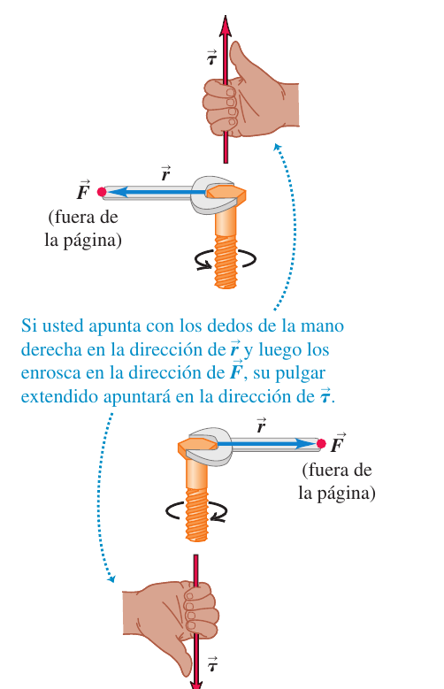
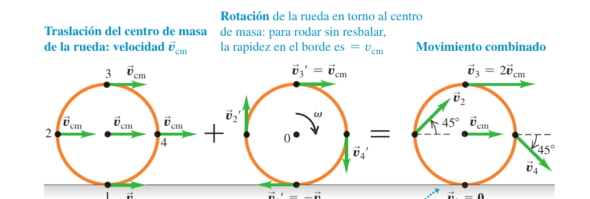
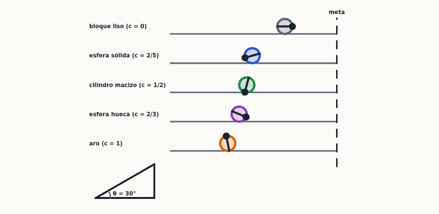
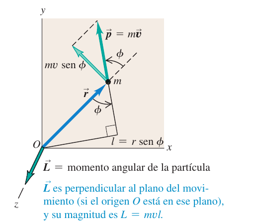
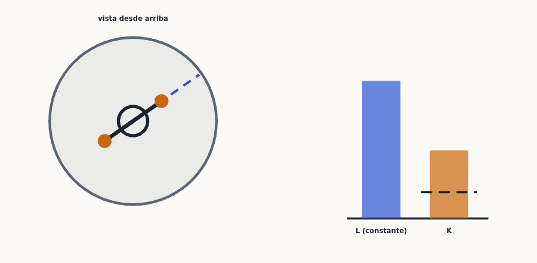
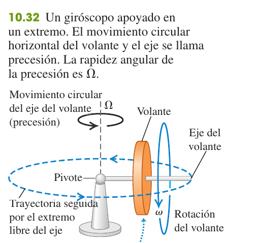
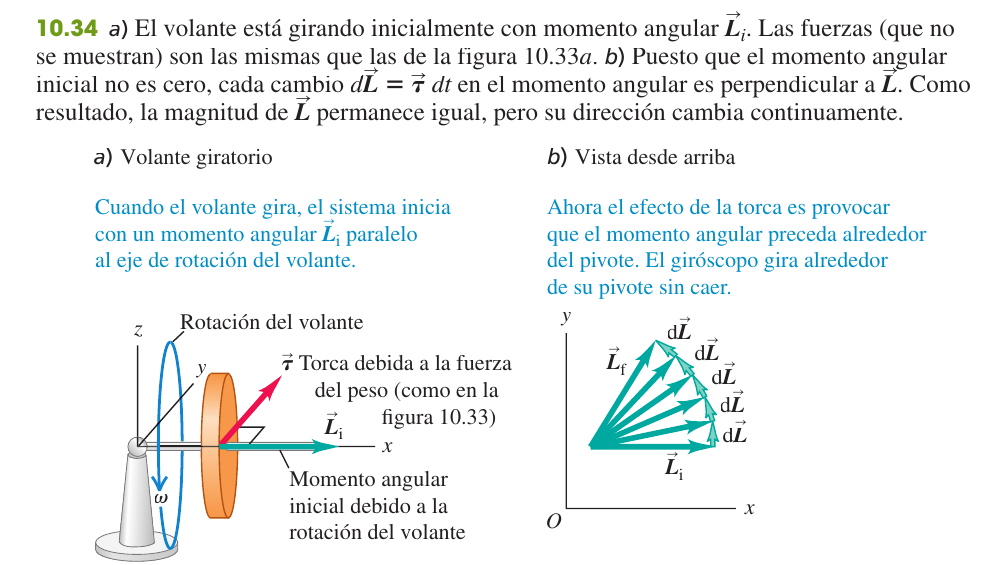
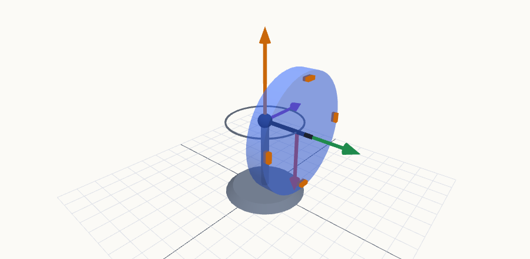
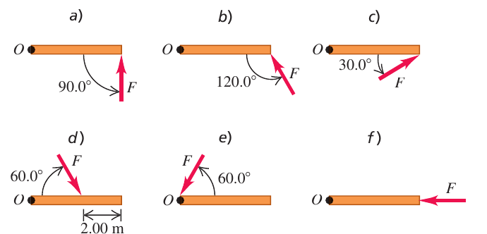

Dinámica del movimiento de rotación
En el tema 9 describiste el giro; ahora descubres qué lo provoca. La fuerza que acelera un movimiento rectilíneo tiene un gemelo para la rotación, la torca (o momento de una fuerza), y la segunda ley de Newton se convierte en $\sum\tau=I\alpha$. Con ella entenderás por qué una bola rueda por una rampa más despacio que un bloque que desliza, qué hace la fricción en un yoyó, cómo una patinadora acelera su giro al encoger los brazos (conservación del momento angular) y por qué un giróscopo no se cae.
0Antes de empezar U p.304
Prerrequisitos: la segunda ley de Newton $\sum\vec F=m\vec a$ y los diagramas de cuerpo libre (temas 4 y 5), incluida la fricción estática $f_s\le\mu_sn$ (tema 5); el trabajo, la energía cinética y la conservación de la energía (temas 6 y 7); el centro de masa y la conservación de la cantidad de movimiento (tema 8); y todo el tema 9: $\theta$, $\omega$, $\alpha$, la relación $v=r\omega$, el momento de inercia $I$ y la energía de rotación $\tfrac12I\omega^2$. También el producto vectorial $\vec A\times\vec B$ y la regla de la mano derecha (tema 1).
Mapa del tema: 10.1 define la torca $\tau=Fl$ (y su versión vectorial $\vec r\times\vec F$). 10.2 da la segunda ley de la rotación $\sum\tau_z=I\alpha_z$. 10.3 combina traslación y rotación: la energía $K=\tfrac12Mv_{cm}^2+\tfrac12I_{cm}\omega^2$, la condición de rodar sin resbalar $v_{cm}=R\omega$ y las dos ecuaciones $\sum\vec F=M\vec a_{cm}$, $\sum\tau_{cm}=I_{cm}\alpha$ (yoyós, bolas en rampas). 10.4 es el trabajo y la potencia en rotación. 10.5 y 10.6 introducen el momento angular $\vec L$ y su conservación. 10.7 acaba con los giróscopos y la precesión.
Este es un tema muy examinado: hay seis problemas de 3 puntos y cuatro preguntas de teoría de 4 puntos (sobre dos temas) con este contenido, y casi todos son de dos tipos: cuerpo que rueda o se desenrolla con fricción (yoyós, cilindros en rampas) y conservación del momento angular en un choque o un salto. Están todos resueltos paso a paso como X1-X8.
| Examen real | De qué va | Ejercicio |
|---|---|---|
| Febrero 2023 (1ª sem.) P-2 | Cilindro macizo en rampa de 50°: $\mu_s$ mínimo, aceleración, ¿y si es hueco? | X1 |
| Febrero 2018 (1ª sem.) P-1 | Yoyó de dos discos con cuerda fija: $\alpha$, $a_{cm}$, $v_{cm}$ | X2 |
| Febrero 2025 (1ª sem.) P-1 | Cilindro que sube rodando una rampa de 35° tirado por una fuerza: $F_{máx}$ y tiempo mínimo | X3 |
| Febrero 2019 (1ª sem.) P-2 | Cilindro empujado en su centro con $F=t^2/2$: ¿cuándo desliza? | X4 |
| Febrero 2024 (2ª sem.) P-1 | Acróbata que salta de una barra con eje: conservación de $L$, energía cinética | X5 |
| Septiembre 2019 P-1 (a) | Bala que se incrusta en una varilla con pivote: momento angular | X6 |
| Febrero 2025 (2ª sem.) P-3 Opción A | Teoría: «Trabajo y potencia en un movimiento de rotación» + 2 cuestiones | X7 |
| Septiembre 2024 P-3 Opción A; Feb. 2019 (1ª) P-3 (3.2); Feb. 2020 (2ª) P-3 (3.1) | Teoría: «Conservación del momento angular» (+ huevo crudo/duro y rotor de cola en Sept. 2024) | X8 |
- Dibuja y elige el sentido positivo de giro (normalmente el antihorario) y, para cada cuerpo, su diagrama de cuerpo libre con el punto de aplicación de cada fuerza: ahora el dónde importa tanto como el cuánto.
- Decide qué hace cada cuerpo: ¿solo gira alrededor de un eje fijo (rueda con cojinetes, puerta)? ¿solo se traslada? ¿ambas cosas (rueda que rueda, yoyó)?
- Escribe las ecuaciones: $\sum\vec F=M\vec a_{cm}$ (traslación) y $\sum\tau=I\alpha$ respecto al eje fijo o respecto al centro de masa (rotación). Una torca por cada fuerza que no pase por ese punto: $\tau=\pm F\,l$.
- Añade la ligadura geométrica: cuerda que no resbala, $a=R\alpha$; rodar sin resbalar, $v_{cm}=R\omega$ y $a_{cm}=R\alpha$.
- Si hay fricción estática, su valor es el que haga falta para cumplir la ligadura, y solo debe comprobarse al final que $f\le\mu_sn$.
- Si te piden un estado final y no un tiempo (o hay un choque/salto), cambia de método: energía (§10.3-10.4) o conservación de $L$ (§10.6). Comprueba unidades (rad, kg·m²) y casos límite.
1Torca (momento de una fuerza) U p.304
Para abrir una puerta pesada empujas lejos de las bisagras y perpendicularmente a ella; si empujas junto a las bisagras, o en la dirección de la propia puerta, no se mueve por mucho que empujes. Para aflojar una tuerca usas una llave larga. Lo que «hace girar» no es la fuerza sola, sino la fuerza multiplicada por la distancia perpendicular al eje. A esa cantidad la llamamos torca (los ingenieros la llaman «momento de una fuerza»; también «par»). Es para la rotación lo que la fuerza es para la traslación: la causa de que cambie el estado de giro.
U p.304Si la fuerza $\vec F$ actúa en un punto cuyo vector de posición respecto a O es $\vec r$, la magnitud de su torca respecto a O es $$\tau=Fl=rF\,\sin\phi=F_{tan}\,r\qquad\text{(ec. 10.1 y 10.2)}$$ donde $\phi$ es el ángulo entre $\vec r$ y $\vec F$, $l=r\sin\phi$ es el brazo de palanca (distancia perpendicular de O a la línea de acción de $\vec F$) y $F_{tan}=F\sin\phi$ es la componente de $\vec F$ perpendicular a $\vec r$. La componente radial $F_{rad}$ no produce torca. En el plano, una torca que gira en sentido antihorario es positiva y una horaria, negativa. Unidades: N·m (¡no se llaman julios!).
U p.304-305La torca es en realidad el producto vectorial $$\vec\tau=\vec r\times\vec F\qquad\text{(ec. 10.3)}$$ Su módulo es $rF\sin\phi$ y su dirección es perpendicular al plano de $\vec r$ y $\vec F$, con el sentido de la regla de la mano derecha: apunta con los dedos de la mano derecha a lo largo de $\vec r$ y enróscalos hacia $\vec F$; el pulgar da $\vec\tau$. Para giros en un plano ($\vec\tau$ perpendicular a la página), se usa un punto $\odot$ para «sale de la página» (antihorario, $+$) y una cruz $\otimes$ para «entra en la página» (horario, $-$).
U p.305
No existe «la torca de una fuerza» sin decir respecto a qué punto o eje: cambia si cambias O. Y recuerda que el brazo de palanca es la distancia perpendicular de O a la recta de la fuerza, no la distancia a su punto de aplicación (salvo que $\vec F\perp\vec r$). Si la recta de acción pasa por O (fuerza aplicada en O o dirigida hacia O), la torca es cero.
U p.304Un plomero pone un pedazo de tubo («extensión») en el mango de su llave y se para en el extremo, con todo su peso, $F=900$ N, aplicado a $r=0{,}80$ m del centro de la junta. El mango y la extensión forman 19° con la horizontal. Calcula la torca respecto al centro de la junta.
- Ángulo $\phi$. $\vec r$ va del centro de la junta al extremo de la llave (19° sobre la horizontal) y $\vec F$ es el peso (vertical, hacia abajo): $\phi=90^\circ+19^\circ=109^\circ$.
- Brazo de palanca. $l=r\sin\phi=(0{,}80\ \text{m})\sin109^\circ=0{,}756$ m.
- Torca. $\tau=Fl=(900\ \text{N})(0{,}756\ \text{m})=680\ \text{N}\!\cdot\!\text{m}$. Con la otra forma: $F_{tan}=F\sin\phi=851$ N y $\tau=F_{tan}r=680$ N·m.
- Dirección. Por la regla de la mano derecha, $\vec\tau$ sale de la página (antihoraria): la llave tiende a girar aflojando la junta.
2Torca y aceleración angular de un cuerpo rígido U p.306
Empieza con una sola partícula de masa $m$ atada a una varilla ligera de longitud $r$ que gira alrededor de un eje. Si la empujas con una fuerza tangencial $F_{tan}$, la segunda ley dice $F_{tan}=ma_{tan}$. Multiplica por $r$: $F_{tan}r=m\,a_{tan}\,r=m\,(r\alpha)\,r=(mr^2)\alpha$. A la izquierda tienes la torca; entre paréntesis, el momento de inercia de la partícula. Para un cuerpo rígido (muchas partículas que giran con el mismo $\alpha$) se suman todas, y como las torcas internas se anulan por pares (acción y reacción son iguales, opuestas y están sobre la misma recta), solo quedan las externas:
U p.306-307La torca neta (suma de las torcas de las fuerzas externas respecto al eje $z$) es el momento de inercia respecto a ese eje por la aceleración angular. Es el calco de $\sum F_x=ma_x$: torca ↔ fuerza, $I$ ↔ masa, $\alpha$ ↔ aceleración. A más $I$, más cuesta cambiar el giro. Con $\alpha$ en rad/s². Vale para cuerpos rígidos (y también en los giros alrededor del centro de masa que veremos en §10.3).
U p.307- Identificar: usa $\sum\tau_z=I\alpha_z$ cuando la incógnita sea una fuerza, una torca, una aceleración (angular), o un tiempo; para velocidades tras un desplazamiento, suele ser mejor la energía.
- Plantear: esquema con el eje; un diagrama de cuerpo libre por cada cuerpo con las dimensiones y los ángulos; ejes y sentido de giro positivo; relaciones geométricas ($a=R\alpha$ para una cuerda que no resbala).
- Ejecutar: aplica $\sum\vec F=m\vec a$ y/o $\sum\tau_z=I\alpha_z$ a cada cuerpo; tantas ecuaciones como incógnitas.
- Evaluar: comprueba signos, unidades y casos límite.
Un cilindro sólido uniforme de masa $M=50$ kg y diámetro 0,120 m ($R=0{,}060$ m) gira sin fricción en torno a su eje. Un cable ligero enrollado en él se tira con una fuerza constante $F=9{,}0$ N. ¿Qué aceleración angular tiene el cilindro y qué aceleración tiene el cable?
- Torca. El cable sale tangente al borde, así que el brazo de palanca es $R$: $\tau=FR=(9{,}0)(0{,}060)=0{,}54$ N·m. La normal y el peso pasan por el eje: torca cero.
- Momento de inercia (cilindro macizo, tabla 9.2): $I=\tfrac12MR^2=\tfrac12(50)(0{,}060)^2=0{,}090$ kg·m².
- Segunda ley: $\alpha=\tau/I=0{,}54/0{,}090=6{,}0$ rad/s².
- Cable (no resbala): $a=R\alpha=(0{,}060)(6{,}0)=0{,}36$ m/s². (Nota: $a=F/M=0{,}18$ m/s² no vale: el cilindro no se traslada, gira.)
El cable del ejemplo anterior se sustituye por un bloque de masa $m$ colgado de él. El bloque se suelta; ¿qué aceleración $a$ tiene y qué tensión $T$ soporta el cable?
- Bloque (solo traslación, $y$ hacia abajo): $mg-T=ma$.
- Cilindro (solo giro): la tensión da la torca $TR=I\alpha=\tfrac12MR^2\alpha$.
- Ligadura: $a=R\alpha$, de donde $T=\tfrac12Ma$.
- Resolver: $mg=ma+\tfrac12Ma$ ⇒ $a=\dfrac{g}{1+M/2m}$ y $T=\dfrac{Mmg}{M+2m}$. Siempre $a\lt g$ y $T\lt mg$ (el bloque no está en caída libre porque tiene que hacer girar el cilindro). Es el mismo resultado que dio la energía en el tema 9.
Suponer que la tensión de un cable que mueve una polea o un cilindro con masa es $T=mg$, o que es la misma a ambos lados de la polea. Con una polea con masa, las tensiones a cada lado son distintas y su diferencia es justo lo que produce la torca $\Delta T\cdot R=I\alpha$.
U p.309, 3283Rotación de un cuerpo rígido en torno a un eje móvil: rodadura U p.309
Una rueda que rueda por el suelo hace dos cosas a la vez: su centro avanza como si fuera una partícula, y la rueda gira alrededor de ese centro. El movimiento de cualquier cuerpo rígido (una moneda lanzada al aire, un balón que bota, una bola de bolos) se puede separar así en traslación del centro de masa + rotación alrededor del centro de masa. Lo bueno es que ambas partes se tratan por separado, cada una con su ley: $\sum\vec F=M\vec a_{cm}$ y $\sum\tau_{cm}=I_{cm}\alpha$.
U p.309-310Se obtiene escribiendo la velocidad de cada partícula como $\vec v_i=\vec v_{cm}+\vec v_i'$ (la del centro de masa más la del giro alrededor de él). Si el cuerpo cambia de altura, además hay energía potencial gravitatoria $U=Mgy_{cm}$ (se calcula como si toda la masa estuviera en el centro de masa).
U p.310-311Vista desde el centro de masa, la rueda solo gira, y el punto de contacto se mueve hacia atrás con rapidez $R\omega$. Pero visto desde el suelo, ese punto está instantáneamente en reposo (si no, estaría patinando). Para eso hace falta que la velocidad del centro, hacia delante, compense exactamente: $$v_{cm}=R\omega\qquad\text{(ec. 10.11)}$$ y, derivando, $a_{cm}=R\alpha$. Cada punto del cuerpo tiene la velocidad $\vec v_{cm}+\vec v'$: el punto de contacto, 0; el centro, $v_{cm}$; el punto más alto, $2v_{cm}$; los de los lados, $\sqrt2\,v_{cm}$ a 45°. Equivale a decir que la rueda gira, en cada instante, alrededor del punto de contacto, y por eso $K=\tfrac12I_P\omega^2$ con $I_P=I_{cm}+MR^2$ (ejes paralelos): da lo mismo que (10.8).
U p.311
Solo vale cuando rueda sin resbalar. Un coche que «arranca» con las ruedas patinando tiene $R\omega>v_{cm}$; un coche que derrapa frenando con las ruedas bloqueadas, $R\omega<v_{cm}$. En esos casos hay fricción cinética ($f_k=\mu_kn$) y $v_{cm}$ y $\omega$ son independientes.
U p.311Un yoyó es un cilindro macizo de masa $M$ y radio $R$ con un hilo enrollado, cuyo extremo se sujeta fijo. Se suelta desde el reposo y baja una altura $h$. ¿Qué rapidez tiene su centro?
- Ligadura. El punto del hilo está en reposo: $v_{cm}=R\omega$.
- Energía (la tensión no trabaja, su punto de aplicación está en reposo): $Mgh=\tfrac12Mv_{cm}^2+\tfrac12\left(\tfrac12MR^2\right)\left(\dfrac{v_{cm}}{R}\right)^2=\tfrac34Mv_{cm}^2$.
- Resultado: $v_{cm}=\sqrt{\dfrac{4gh}{3}}$, menor que $\sqrt{2gh}$ de la caída libre: un tercio de la energía va a girar el cilindro.
Un cuerpo con $I_{cm}=cMR^2$ (esfera sólida $c=\tfrac25$, cilindro $\tfrac12$, esfera hueca $\tfrac23$, aro $1$) baja rodando sin resbalar una altura $h$ desde el reposo. ¿Qué rapidez lleva?
- $Mgh=\tfrac12Mv_{cm}^2+\tfrac12(cMR^2)(v_{cm}/R)^2=\tfrac12(1+c)Mv_{cm}^2$.
- $v_{cm}=\sqrt{\dfrac{2gh}{1+c}}$. No depende de $M$ ni de $R$: todos los cilindros macizos llegan a la vez, sean grandes o pequeños, de plomo o de madera.
- Gana el de menor $c$ (el que tiene su masa más cerca del eje): esfera sólida $\gt$ cilindro macizo $\gt$ esfera hueca $\gt$ aro. Y todos pierden contra un bloque que desliza sin fricción ($c=0$, $v=\sqrt{2gh}$).
Cuando el eje de rotación pasa por el centro de masa, es un eje de simetría y no cambia de dirección (rueda, cilindro, esfera), se cumplen por separado $$\sum\vec F_{ext}=M\vec a_{cm}\quad(10.12)\qquad\qquad\sum\tau_{cm}=I_{cm}\,\alpha_z\quad(10.13)$$ aunque el centro de masa esté acelerando. Es decir: la traslación se calcula con las fuerzas como si todas estuvieran en el centro de masa; el giro, con las torcas respecto al centro de masa. El peso, aplicado en el centro de masa, no da torca respecto a él. Dos incógnitas (la aceleración y $\alpha$) más la ligadura $a_{cm}=R\alpha$.
U p.313El mismo yoyó del ejemplo 10.4 (cilindro macizo con el hilo enrollado en su borde, extremo fijo). Calcula su aceleración y la tensión del hilo.
- DCL. Peso $Mg$ (en el centro, hacia abajo) y tensión $T$ (hacia arriba, en el borde: brazo $R$). Eje $y$ hacia abajo.
- Traslación: $Mg-T=Ma_{cm}$. Rotación respecto al cm: solo $T$ da torca: $TR=I_{cm}\alpha=\tfrac12MR^2\alpha$ ⇒ $T=\tfrac12MR\alpha$.
- Ligadura (el hilo no resbala): $a_{cm}=R\alpha$ ⇒ $T=\tfrac12Ma_{cm}$.
- Resolver: $Mg=\tfrac32Ma_{cm}$ ⇒ $\boxed{a_{cm}=\tfrac23g}$ y $\boxed{T=\tfrac13Mg}$. (Coincide con lo que da la energía del ejemplo 10.4: $v^2=2ah=\tfrac43gh$.)
Una bola de bolos (esfera sólida, $I_{cm}=\tfrac25MR^2$) baja rodando sin resbalar por una rampa de ángulo $\beta$. ¿Qué aceleración tiene y cuánta fricción hace falta?
- DCL. Peso $Mg$ (en el cm), normal $n$ (su recta pasa por el cm) y fricción estática $f$ en el punto de contacto, paralela a la rampa. Eje $x$ rampa abajo. Solo $f$ da torca respecto al cm.
- Sentido de $f$. La bola aumenta su giro en el sentido de «bajar rodando»; la única torca que lo logra es la de $f$, y para eso debe apuntar hacia arriba de la rampa. (Se opone al deslizamiento que habría sin ella, no «al movimiento».)
- Ecuaciones: $Mg\sin\beta-f=Ma_{cm}$; $fR=\tfrac25MR^2\alpha$; $a_{cm}=R\alpha$ ⇒ $f=\tfrac25Ma_{cm}$.
- Resolver: $Mg\sin\beta=\tfrac75Ma_{cm}$ ⇒ $\boxed{a_{cm}=\tfrac57g\sin\beta}$ y $\boxed{f=\tfrac27Mg\sin\beta}$.
- Condición para no resbalar: $f\le\mu_sn=\mu_sMg\cos\beta$ ⇒ $\mu_s\ge\tfrac27\tan\beta$.
Con $c=\tfrac25$ (esfera) sale el $\tfrac57$ del ejemplo 10.7; con $c=\tfrac12$ (cilindro), $\tfrac23$ y $\mu_{s,\min}=\tfrac13\tan\beta$; con $c=1$ (aro), $\tfrac12$ y $\mu_{s,\min}=\tfrac12\tan\beta$. El cuerpo que tiene más $I$ necesita más fricción para rodar sin resbalar, porque hace falta más torca para darle la misma $\alpha$. Vale igual cuando el cuerpo sube la rampa (ver problema 10.26).
P
En la rodadura sin resbalar el punto de contacto está en reposo instantáneo, así que la fricción estática no realiza trabajo sobre el cuerpo: la energía mecánica se conserva (por eso funcionan los ejemplos 10.4 y 10.5 con energía). Lo único que hace es transferir energía de traslación a rotación. La fricción de rodamiento real, causada por la deformación de la rueda y del suelo (fig. 10.20 de U), sí disipa energía, pero con cuerpos ideales se desprecia.
U p.312, 314-3154Trabajo y potencia en el movimiento de rotación U p.315
Cuando empujas el borde de un tiovivo, la fuerza trabaja porque su punto de aplicación se desplaza. Si el borde gira un ángulo pequeño $d\theta$, ese punto recorre un arco $ds=R\,d\theta$, y solo la componente tangencial de la fuerza trabaja (la radial es perpendicular al desplazamiento). El resultado cabe en una línea: trabajo = torca × ángulo girado, la versión giratoria de «fuerza × distancia».
U p.315-316El trabajo total de las torcas es el cambio de energía cinética de rotación (teorema trabajo-energía). La demostración: $\tau_z=I\alpha_z=I\omega_z\,d\omega_z/d\theta$, luego $\tau_z\,d\theta=I\omega_z\,d\omega_z$, que al integrar da $\Delta(\tfrac12I\omega^2)$. La potencia es la torca por la velocidad angular, análogo de $P=Fv$: a potencia fija, más torca significa menos revoluciones (por eso las marchas cortas de un coche). $\theta$ en radianes y $\omega$ en rad/s.
U p.315-316| Traslación | Rotación |
|---|---|
| $x,\ v_x,\ a_x$ | $\theta,\ \omega_z,\ \alpha_z$ |
| masa $m$ | momento de inercia $I$ |
| fuerza $F$ | torca $\tau$ |
| $\sum F=ma$ | $\sum\tau=I\alpha$ |
| $K=\tfrac12mv^2$ | $K=\tfrac12I\omega^2$ |
| $W=Fx$ (F cte) | $W=\tau\,\Delta\theta$ ($\tau$ cte) |
| $P=Fv$ | $P=\tau\omega$ |
| cantidad de movimiento $p=mv$ ($\sum F=dp/dt$) | momento angular $L=I\omega$ ($\sum\tau=dL/dt$), §10.5 |
Un motor eléctrico aplica una torca constante $\tau=10$ N·m a una piedra de afilar, con $I=2{,}0$ kg·m², que parte del reposo. ¿Cuánto vale $\omega$ a los 8,0 s? ¿Cuánto trabajo se ha hecho? ¿Qué potencia instantánea y media hay?
- Aceleración angular (constante): $\alpha=\tau/I=10/2{,}0=5{,}0$ rad/s².
- Velocidad y ángulo a los 8,0 s: $\omega=\alpha t=40$ rad/s; $\Delta\theta=\tfrac12\alpha t^2=160$ rad.
- Trabajo: $W=\tau\Delta\theta=(10)(160)=1600$ J. Comprobación: $\Delta K=\tfrac12I\omega^2=\tfrac12(2{,}0)(40)^2=1600$ J ✓.
- Potencia: $P=\tau\omega$ crece desde 0 hasta $(10)(40)=400$ W; la media es $P_{med}=W/t=1600/8{,}0=200$ W (la mitad de la final, porque $P$ crece linealmente).
Usar revoluciones, grados o rpm en $W=\tau\Delta\theta$ o $P=\tau\omega$ (da un resultado en «N·m·rev», no en julios), o decir que la componente radial de la fuerza realiza trabajo. Otro: confundir la torca (N·m) con el trabajo (J): tienen las mismas unidades pero son magnitudes distintas (una es un vector, la otra un escalar).
U p.315-3165Momento angular U p.317
El momento lineal $\vec p=m\vec v$ mide «lo difícil que es parar» una partícula en línea recta. El momento angular mide lo difícil que es parar su giro alrededor de un punto: una partícula con mucha masa, rápida y cuya recta de movimiento pasa lejos del punto (brazo $l$ grande) «lleva» mucho momento angular, aunque se mueva en línea recta. Una bola de billar que pasa a 10 cm de ti y otra a 1 m, con la misma velocidad, tienen distinto momento angular respecto a tu posición. Y lo verdaderamente importante: igual que $\sum\vec F=d\vec p/dt$, la torca es la rapidez con la que cambia el momento angular.
U p.317Respecto a un origen O (en un sistema inercial), una partícula de masa $m$, posición $\vec r$ y velocidad $\vec v$ tiene $$\vec L=\vec r\times\vec p=\vec r\times m\vec v\ (10.24)\qquad L=mvr\sin\phi=mvl\ (10.25)$$ con $l$ la distancia perpendicular de O a la recta de $\vec v$ (el «brazo de palanca» del momento lineal). $\vec L$ es perpendicular al plano de $\vec r$ y $\vec v$ (regla de la mano derecha) y depende del origen O elegido. Unidades: kg·m²/s.
U p.317
Derivando $\vec L=\vec r\times m\vec v$ ($\vec v\times\vec v=0$): $\dfrac{d\vec L}{dt}=\vec r\times m\vec a=\vec r\times\vec F$, es decir $$\frac{d\vec L}{dt}=\vec\tau\quad\text{(partícula, 10.26)}\qquad\qquad\sum\vec\tau_{ext}=\frac{d\vec L}{dt}\quad\text{(sistema, 10.29)}$$ En un sistema de partículas las torcas internas se cancelan por pares, así que solo cuentan las externas y $\vec L$ es el momento angular total. Para un cuerpo rígido que gira con velocidad angular $\omega$ en torno a un eje de simetría, $$\vec L=I\vec\omega\qquad\text{(10.28)}\qquad L_z=I\omega_z\ \text{(eje fijo)},\qquad \frac{dL_z}{dt}=I\alpha_z=\sum\tau_z$$ que contiene a $\sum\tau_z=I\alpha_z$ como caso particular (con $I$ constante).
U p.317-319Una hélice de avión tiene $I=2{,}5$ kg·m² y su velocidad angular aumenta con el tiempo según $\omega_z(t)=\left(40\ \text{rad/s}^3\right)t^2$. Calcula $L_z$ y $\tau_z$ en $t=3{,}0$ s.
- Momento angular: $L_z=I\omega_z=(2{,}5)(40)t^2=100\,t^2$ ⇒ en $t=3$ s: $L_z=900$ kg·m²/s.
- Torca: $\tau_z=dL_z/dt=200\,t$ ⇒ en $t=3$ s: $\tau_z=600$ N·m. (Comprobación con $I\alpha_z$: $\alpha_z=d\omega_z/dt=80t=240$ rad/s², $I\alpha_z=600$ N·m ✓.)
$\vec L=I\vec\omega$ (10.28) solo vale si el eje de giro es de simetría. Si no lo es (una rueda de coche mal equilibrada, un cuerpo irregular), $\vec L$ no es paralelo a $\vec\omega$ y, aunque $\omega$ sea constante, $\vec L$ describe un cono alrededor del eje: cambia de dirección, así que hace falta una torca externa neta para mantener el giro. Esa torca la ejercen los cojinetes y es la razón de que haya que equilibrar las ruedas de un coche: así su eje de giro pasa a ser de simetría.
U p.3196Conservación del momento angular U p.320
Si no hay torca, el momento angular no cambia: un cuerpo que gira sigue girando igual salvo que algo lo frene o lo acelere. Pero $L=I\omega$ puede mantenerse constante aunque $I$ cambie, y entonces $\omega$ cambia en sentido contrario: la patinadora que gira con los brazos abiertos y los recoge gira mucho más rápido; el saltador de trampolín se encoge para dar más vueltas y se estira para entrar al agua; el gato que cae gira su cuerpo sin apoyarse en nada. Es una de las leyes más fundamentales de la física, igual que la conservación de la energía o de la cantidad de movimiento.
U p.320Si la suma de las torcas externas respecto a un punto o eje es cero ($\sum\vec\tau_{ext}=0$), el momento angular total del sistema respecto a ese punto se conserva: $\vec L=\text{constante}$ (10.31). Si el sistema gira alrededor de un eje y cambia su forma: $$I_1\omega_{1z}=I_2\omega_{2z}\qquad\text{(10.30)}$$ Las torcas internas (los músculos de la patinadora, los pies del corredor sobre la plataforma) no pueden cambiar $L$ total; solo lo redistribuyen entre las partes del sistema. Atención: $L$ se conserva, la energía cinética en general no ($K=L^2/2I$ cambia si cambia $I$; la diferencia es el trabajo de las fuerzas internas o la energía perdida en un choque). Y la conservación depende del punto respecto al cual se calcula: conviene elegir el eje o pivote donde actúan las fuerzas desconocidas, para que su torca sea cero.
U p.320Un profesor se para en el centro de una mesa giratoria sin fricción, con los brazos extendidos y una mancuerna de 5,0 kg en cada mano a 1,0 m del eje, girando una vuelta cada 2,0 s. Su momento de inercia sin mancuernas es 3,0 kg·m² con los brazos extendidos y 2,2 kg·m² con las manos en el abdomen. ¿Qué $\omega$ tiene cuando pega las mancuernas al abdomen (a 0,20 m del eje)?
- Sin torca externa respecto al eje vertical, $L_z$ se conserva: $I_1\omega_{1z}=I_2\omega_{2z}$.
- Momentos de inercia (mancuernas como partículas): $I_1=3{,}0+2(5{,}0)(1{,}0)^2=13$ kg·m²; $I_2=2{,}2+2(5{,}0)(0{,}20)^2=2{,}6$ kg·m². Ojo: $\omega_{1z}=1\ \text{rev}/2{,}0\ \text{s}=0{,}50$ rev/s.
- Resultado: $\omega_{2z}=\dfrac{I_1}{I_2}\omega_{1z}=\dfrac{13}{2{,}6}(0{,}50)=2{,}5$ rev/s: cinco veces más rápido. No hizo falta pasar a rad/s porque aparece una razón de $\omega$.
- Energía: $K_1=\tfrac12(13)(3{,}14)^2=64$ J y $K_2=\tfrac12(2{,}6)(15{,}7)^2=320$ J. La energía cinética aumenta 256 J: es el trabajo que hacen los músculos del profesor al tirar de las mancuernas hacia dentro (tirando hacia dentro de las mancuernas, que tienden a seguir en línea recta).

Un disco A (volante de motor, $I_A=0{,}040$ kg·m²) gira a $\omega_A=50$ rad/s y otro B ($I_B=0{,}020$ kg·m², giro en el mismo sentido) a $\omega_B=200$ rad/s. Se acoplan con un embrague y giran juntos. ¿Con qué $\omega$? ¿Se conserva la energía?
- L se conserva (el embrague solo ejerce torcas internas): $I_A\omega_A+I_B\omega_B=(I_A+I_B)\omega$.
- $\omega=\dfrac{(0{,}040)(50)+(0{,}020)(200)}{0{,}060}=\dfrac{2{,}0+4{,}0}{0{,}060}=100$ rad/s.
- Energía: $K_i=\tfrac12(0{,}040)(50)^2+\tfrac12(0{,}020)(200)^2=450$ J; $K_f=\tfrac12(0{,}060)(100)^2=300$ J. Se pierden 150 J (un tercio), convertidos en energía térmica por la fricción del embrague: igual que en un choque perfectamente inelástico.
Una puerta de 1,00 m de ancho y 15 kg, con bisagras en un costado, gira sin fricción en torno a un eje vertical. Una bala de 10 g a 400 m/s se incrusta en el centro de la puerta, perpendicularmente. ¿Con qué rapidez angular gira la puerta? ¿Se conserva la energía cinética?
- Sistema puerta + bala; respecto al eje de las bisagras no hay torca externa (la fuerza de las bisagras pasa por el eje), así que $L$ se conserva.
- Antes: solo la bala; $L=mvl=(0{,}010)(400)(0{,}50)=2{,}0$ kg·m²/s.
- Después: $L=I\omega$ con $I=I_{puerta}+I_{bala}=\tfrac13Md^2+ml^2=\tfrac13(15)(1{,}00)^2+(0{,}010)(0{,}50)^2=5{,}0+0{,}0025\approx5{,}0$ kg·m² (tabla 9.2, puerta como varilla por un extremo).
- $\omega=\dfrac{2{,}0}{5{,}0}=0{,}40$ rad/s.
- Energía: $K_1=\tfrac12(0{,}010)(400)^2=800$ J; $K_2=\tfrac12(5{,}0)(0{,}40)^2=0{,}40$ J. Casi toda se pierde en deformar la puerta y la bala (choque inelástico). Mismo método que en el problema de examen X6.
- Conservar la energía cinética en lugar de $L$ en un choque o un cambio de forma. Lo que se conserva es $L$ (sin torca externa); $K$ solo en choques perfectamente elásticos.
- Conservar la cantidad de movimiento lineal cuando hay un eje o pivote fijo: la fuerza del eje cambia $\vec p$, pero su torca respecto al eje es cero. Hay que tomar momentos respecto al eje.
- Mezclar signos: si dos cuerpos giran en sentidos opuestos, sus momentos angulares se restan. Elige un sentido positivo y respétalo.
- Olvidar la masa que se mueve: la mancuerna, la bala o el corredor aportan $mr^2$ al momento de inercia final.
7Giróscopos y precesión U p.322
Un volante apoyado en un extremo de su eje, si no gira, se cae por su peso. Pero si gira deprisa, ¡no cae!: su eje describe lentamente un círculo horizontal alrededor del pivote. Es la precesión, la que hace que una peonza no se caiga, que que el eje de la Tierra dibuje un cono cada 26 000 años. La clave: una torca no hace caer al giróscopo, hace girar su vector $\vec L$, igual que en una pelota atada a una cuerda: la tensión, perpendicular a la velocidad, no cambia la rapidez, solo la hace girar.
U p.322-324
El peso $\vec w=M\vec g$ actúa en el centro de masa, a distancia $r$ del pivote, y da una torca $\vec\tau=\vec r\times\vec w$ horizontal y perpendicular a $\vec L$ (que va a lo largo del eje, $L=I\omega$). Durante $dt$, $d\vec L=\vec\tau\,dt$ es perpendicular a $\vec L$: cambia su dirección y no su módulo. El eje gira un ángulo $d\phi=|d\vec L|/L=\tau\,dt/L$, así que la rapidez angular de precesión es $$\boxed{\Omega=\frac{d\phi}{dt}=\frac{\tau}{L}=\frac{wr}{I\omega}}\qquad\text{(ec. 10.33)}$$ Es inversamente proporcional a la rapidez de giro $\omega$: un giróscopo que gira muy deprisa precesa muy despacio, y si la fricción lo frena, ¡la precesión se hace más rápida! La aproximación (hemos ignorado la componente vertical de $\vec L$) es buena si $\Omega\ll\omega$ (precesión «lenta»). Si el volante no gira, no hay $\vec L$ inicial y cae. Cuando el giro se frena y $\Omega$ crece, el eje deja de ser un círculo limpio: además cabecea arriba y abajo, un «bamboleo» llamado nutación, superpuesto a la precesión.
U p.323-324La rueda de un giróscopo es un cilindro macizo uniforme de radio $R=3{,}0$ cm cuyo centro está a $r=2{,}0$ cm del pivote; el eje tiene masa despreciable. Vista desde arriba, el eje tarda 4,0 s en dar una vuelta de precesión. a) ¿En qué sentido precesa? b) ¿Con qué rapidez angular $\omega$ gira la rueda?
- a) Sentido. El peso (hacia abajo) actúa en $\vec r$ y da $\vec\tau=\vec r\times\vec w$, horizontal; con la regla de la mano derecha, $\vec\tau$ apunta hacia arriba de la página en la vista desde arriba. Como $d\vec L=\vec\tau\,dt$ tiene esa dirección y es perpendicular a $\vec L$, el vector $\vec L$ (y con él el eje) gira en el sentido de las agujas del reloj vista desde arriba.
- b) $\Omega=\dfrac{2\pi\ \text{rad}}{4{,}0\ \text{s}}=1{,}57$ rad/s. ¡No confundir $\Omega$ con $\omega$!
- Con $I=\tfrac12MR^2$ (ec. 10.33): $\omega=\dfrac{wr}{I\Omega}=\dfrac{Mgr}{\tfrac12MR^2\,\Omega}=\dfrac{2gr}{R^2\Omega}=\dfrac{2(9{,}8)(2{,}0\times10^{-2})}{(3{,}0\times10^{-2})^2(1{,}57)}\approx280\ \text{rad/s}\approx2600\ \text{rpm}$. La masa se simplifica.
- Evaluar: $\Omega$ es solo el 0,6 % de $\omega$: precesión muy lenta, como supone la fórmula.


Un giróscopo precesa a $\Omega_T=0{,}50$ rad/s en la Tierra. ¿Con qué rapidez precesaría en una base lunar, donde $g_L=0{,}165\,g$? (La masa, $r$, $I$ y $\omega$ son los mismos.)
- Qué cambia: $\Omega=\dfrac{mgr}{I\omega}$ (10.33). Solo $g$ difiere; el resto es constante, así que $\Omega\propto g$.
- $\dfrac{\Omega_L}{\Omega_T}=\dfrac{g_L}{g}$ ⇒ $\Omega_L=0{,}165\,(0{,}50\ \text{rad/s})=\mathbf{0{,}0825\ rad/s}$, unas seis veces más lenta: con menos peso, menos torca, menos precesión (si $g\to0$, $\Omega\to0$).
- Pensar que la torca «empuja» el eje en su propia dirección: la torca va en la dirección de $d\vec L$, que es perpendicular a $\vec L$ (como una fuerza centrípeta no cambia la rapidez, solo la dirección).
- Confundir $\Omega$ (precesión, rad/s) con $\omega$ (giro del volante): la fórmula (10.33) tiene $\omega$ en el denominador y $\Omega$ a la izquierda.
- Aplicarla con precesión rápida: solo vale cuando $\Omega\ll\omega$.
8Ejercicios resueltos
Primero los problemas de examen real (X1-X6, de menos a más difíciles), luego las dos preguntas de teoría de examen (X7 y X8, con su esquema de desarrollo y las cuestiones cortas), después los nueve bloques del solucionario (E1-E9) y, al final, el problema práctico del capítulo. Cada ejercicio termina con una receta y, si procede, el error típico. Intenta resolver tú antes de abrir la solución. Todos siguen la receta maestra de la sección 0. Si el enunciado no da $g$, se usa $g=9{,}8$ m/s² (como U); si lo da ($9{,}81$), ese.
X1 — Cilindro macizo (y hueco) que baja rodando por una rampa de 50° X U p.311-314
Se deja caer un cilindro sólido de masa $m$ y radio $r$ por una superficie inclinada que forma un ángulo de 50° con la horizontal. (a) Calcular el valor mínimo del coeficiente de fricción estática entre la superficie del cilindro y la de la rampa para que ruede sin deslizamiento. (b) Calcular la aceleración lineal del primer cilindro si cae rodando como en el apartado anterior, sabiendo que su masa es 1 kg y su radio 0,5 m. (c) ¿Qué pasaría si en lugar de un cilindro macizo fuera uno hueco con la misma masa concentrada en la superficie y el coeficiente de fricción calculado en (a)? ¿Rodaría también sin deslizamiento? Considere $g=9{,}81$ m/s², $I_{cilindro}=\tfrac12mr^2$, $I_{hueco}=mr^2$.
- Qué tipo de problema es. El cilindro se traslada (baja) y a la vez gira: caso «eje móvil» de §10.3. Dos ecuaciones, una para el cm (10.12) y otra para el giro respecto al cm (10.13), más la ligadura $a_{cm}=r\alpha$. Es el ejemplo 10.7 (bola de bolos) con otro $I$.
- DCL y sentido de la fricción. Peso $mg$ (en el cm), normal $n$ (recta por el cm) y fricción estática $f$ en el contacto, paralela a la rampa. Respecto al cm, el peso y la normal no dan torca; solo $f$ puede hacer girar el cilindro. Para que gane giro en el sentido de bajar rodando, $f$ apunta rampa arriba. Eje $x$ rampa abajo.
- Perpendicular a la rampa (no hay movimiento): $n=mg\cos\theta$.
- Traslación: $mg\sin\theta-f=ma_{cm}$. Rotación respecto al cm: $fr=I_{cm}\alpha=\tfrac12mr^2\alpha$.
- Ligadura: $\alpha=a_{cm}/r$ ⇒ $f=\tfrac12ma_{cm}$. Sustituyendo: $mg\sin\theta=\tfrac32ma_{cm}$ ⇒ $a_{cm}=\tfrac23g\sin\theta$ y $f=\tfrac13mg\sin\theta$.
- (a) La fricción estática solo puede llegar hasta $\mu_sn$: $f\le\mu_sn$ ⇒ $\tfrac13mg\sin\theta\le\mu_smg\cos\theta$ ⇒ $\mu_s\ge\tfrac13\tan\theta=\tfrac13\tan50^\circ=\mathbf{0{,}397}$. No depende de $m$ ni de $r$.
- (b) $a_{cm}=\tfrac23(9{,}81)\sin50^\circ=\mathbf{5{,}01\ m/s^2}$. (Los datos $m=1$ kg y $r=0{,}5$ m solo hacen falta para $\alpha=a_{cm}/r=10{,}0$ rad/s², $f=2{,}50$ N y $n=6{,}31$ N.)
- (c) Cilindro hueco. Se repite con $I=mr^2$: $f=ma_{cm}$ y $mg\sin\theta=2ma_{cm}$ ⇒ $a_{cm}=\tfrac12g\sin\theta$, $f=\tfrac12mg\sin\theta$, que exige $\mu_s\ge\tfrac12\tan50^\circ=0{,}596$. Como el coeficiente disponible es $0{,}397<0{,}596$, no rueda sin deslizar: resbala. Con más $I$ hace falta más torca (más fricción) para dar la misma $\alpha$; en números, necesitaría $f=3{,}76$ N y el máximo es $\mu_sn=2{,}50$ N.
- (c) ampliación. Suponiendo $\mu_k\approx\mu_s=0{,}397$, resbalaría con $f=\mu_kmg\cos\theta$: $a_{cm}=g(\sin\theta-\mu_k\cos\theta)=5{,}01$ m/s² y $\alpha=\mu_kg\cos\theta/r=5{,}01$ rad/s²; como $r\alpha=2{,}50$ m/s² $<a_{cm}$, el punto de contacto se desliza rampa abajo.
Resultado: (a) $\mu_{s,min}=\tfrac13\tan50^\circ=0{,}397$; (b) $a_{cm}=\tfrac23g\sin50^\circ=5{,}01$ m/s²; (c) no: el hueco necesita $\mu_s\ge0{,}596$ y resbala.
Poner $f=\mu_sn$ desde el principio (la fricción estática vale lo que haga falta; $\mu_sn$ es solo su máximo); dibujar la fricción rampa abajo; olvidar que el hueco, al tener más $I$, necesita más fricción.
X2 — Yoyó de dos discos con la cuerda fija X U p.312-314
Un cuerpo formado por dos discos macizos y homogéneos de radio 40 mm unidos por un cilindro de masa despreciable y radio 25 mm, similar a un yoyó, tiene una masa total de 100 g. Se enrolla una cuerda de longitud 1 m al cilindro interior. Si el extremo de la cuerda se mantiene fijo y el cuerpo parte del reposo, calcular: (a) la aceleración angular del cuerpo; (b) la aceleración lineal de su centro de masas; (c) la velocidad del centro de masas en el instante en que se ha desenrollado completamente el hilo.
- Datos en SI ($g=9{,}8$ m/s²): $M=0{,}100$ kg (cada disco, 0,050 kg), $R=0{,}040$ m (discos), $b=0{,}025$ m (eje, donde sale la cuerda), $L=1$ m.
- Momento de inercia. Cada disco macizo respecto a su eje: $\tfrac12m_dR^2$ (tabla 9.2); el eje no tiene masa. $I_{cm}=2\cdot\tfrac12(0{,}050)(0{,}040)^2=8{,}0\times10^{-5}$ kg·m². Ojo: en $I$ entra $R$ (donde está la masa), pero el brazo de la tensión es $b$ (donde está la cuerda).
- Fuerzas (eje $y$ hacia abajo): peso $Mg$ en el cm y tensión $T$ hacia arriba, a distancia $b$ del eje.
- Traslación: $Mg-T=Ma_{cm}$. Rotación respecto al cm: solo $T$ da torca: $Tb=I_{cm}\alpha$.
- Ligadura. El punto del eje en contacto con la cuerda vertical está instantáneamente en reposo, como el punto de contacto de una rueda: $a_{cm}=b\alpha$.
- Resolver. De 4 y 5: $T=I_{cm}a_{cm}/b^2$. Entonces $Mg=a_{cm}(M+I_{cm}/b^2)$: $$a_{cm}=\frac{g}{1+I_{cm}/(Mb^2)},\qquad \frac{I_{cm}}{Mb^2}=\frac{8{,}0\times10^{-5}}{0{,}100\,(0{,}025)^2}=1{,}28$$
- (b) $a_{cm}=9{,}8/2{,}28=\mathbf{4{,}30\ m/s^2}$ hacia abajo. (a) $\alpha=a_{cm}/b=4{,}298/0{,}025=\mathbf{172\ rad/s^2}$. La tensión (no pedida) es $T=M(g-a_{cm})=0{,}550$ N.
- (c) La aceleración es constante (todas las fuerzas lo son), así que $v^2=2a_{cm}\Delta y$ con $\Delta y=L=1$ m (al desenrollarse 1 m de hilo, el cm baja 1 m): $v=\sqrt{2(4{,}298)(1)}=\mathbf{2{,}93\ m/s}$. Tiempo: $t=\sqrt{2L/a}=0{,}68$ s; $\omega_f=v/b=117$ rad/s.
- Comprobación por energía (ej. 10.4): $MgL=\tfrac12Mv^2+\tfrac12I_{cm}(v/b)^2$ ⇒ $v=\sqrt{2gL/(1+I/Mb^2)}=2{,}93$ m/s ✓ (la tensión no trabaja: su punto de aplicación está en reposo).
Resultado: (a) $\alpha=172$ rad/s²; (b) $a_{cm}=4{,}30$ m/s²; (c) $v_{cm}=2{,}93$ m/s (con $g=9{,}81$ salen los mismos valores a 3 cifras).
Usar $R$ en la ligadura ($a=R\alpha$) o $b$ en el momento de inercia; contar mal la masa de cada disco (50 g, no 100 g); creer que el yoyó cae con $g$.
X3 — Cilindro que sube rodando una rampa de 35° tirado por una fuerza X U p.311-314
Un cilindro macizo de distribución de masa uniforme de 490 kg y un radio de 0,25 m sube girando sin deslizar por una rampa inclinada 35° sobre la horizontal y de 6,5 m de largo. La fuerza que consigue que esto sea así se aplica de forma paralela a la superficie sin realizar ningún momento sobre el cilindro. El coeficiente de fricción estática entre la rampa y el cilindro es 0,12. Determine: (a) la magnitud máxima de la fuerza que permite que el cilindro ruede sin deslizar mientras sube; (b) si el cilindro comienza desde el reposo en la parte inferior, rodando sin deslizar, el tiempo mínimo que necesita para alcanzar la parte superior. Considere $g=9{,}81$ m/s².
- «Sin realizar ningún momento». $F$ se aplica en el eje del cilindro, paralela a la rampa y hacia arriba: su recta pasa por el cm y no da torca respecto a él. El peso y la normal tampoco. La única torca posible es la de la fricción.
- Sentido de la fricción (paso clave). El cilindro parte del reposo y sube cada vez más rápido: su $\omega$ debe aumentar en el sentido de «rodar hacia arriba». Solo la fricción lo logra, y para ello debe apuntar rampa abajo (una fuerza rampa abajo en el contacto hace girar el cilindro como al subir rodando). Es decir, la fricción se opone al deslizamiento que habría sin ella, no «al movimiento».
- Ecuaciones (eje $x$ rampa arriba): perpendicular, $n=mg\cos\theta$; traslación, $F-mg\sin\theta-f=ma_{cm}$; rotación, $fR=\tfrac12mR^2\alpha$ con $\alpha=a_{cm}/R$ ⇒ $f=\tfrac12ma_{cm}$.
- Resolver en función de $F$. $F-mg\sin\theta=\tfrac32ma_{cm}$ ⇒ $a_{cm}=\dfrac{2(F-mg\sin\theta)}{3m}$ y $f=\dfrac{F-mg\sin\theta}{3}$.
- (a) Condición de no deslizar: $f\le\mu_sn$ ⇒ $\dfrac{F-mg\sin\theta}{3}\le\mu_smg\cos\theta$ ⇒ $$F_{máx}=mg(\sin\theta+3\mu_s\cos\theta)=490\cdot9{,}81\,(0{,}5736+3\cdot0{,}12\cdot0{,}8192)\approx\mathbf{4{,}17\times10^3\ N}$$ Además, para que suba hace falta $F>mg\sin\theta=2757$ N: rango útil $2757\ \text{N}<F\le4175$ N.
- (b) Tiempo mínimo = mayor aceleración = $F=F_{máx}$, es decir, fricción en su máximo, $f_{máx}=\mu_smg\cos\theta=473$ N. Entonces $a_{máx}=2f_{máx}/m=2\mu_sg\cos\theta=2(0{,}12)(9{,}81)\cos35^\circ=1{,}93$ m/s² (¡no depende de la masa!).
- Cinemática (aceleración constante desde el reposo): $L=\tfrac12a_{máx}t^2$ ⇒ $t_{mín}=\sqrt{2L/a_{máx}}=\sqrt{13/1{,}929}=\mathbf{2{,}60\ s}$.
- Comprobaciones. Al final $v=at=5{,}01$ m/s y $\omega=v/R=20{,}0$ rad/s. Si $\mu_s\to0$, $F_{máx}\to mg\sin\theta$ (sin fricción no podría acelerar rodando) ✓. Un rodillo de acero de 0,25 m de radio y 490 kg mide unos 0,3 m de largo: dato razonable. La masa solo interviene en (a); el tiempo de (b) no depende de $m$ ni de $R$.
Resultado: (a) $F_{máx}=mg(\sin35^\circ+3\mu_s\cos35^\circ)\approx4{,}17$ kN; (b) $t_{mín}=\sqrt{L/(\mu_sg\cos35^\circ)}=2{,}60$ s.
Poner la fricción rampa arriba «porque se opone al movimiento de subida»; olvidar el término $mg\sin\theta$; calcular el tiempo mínimo con una $F$ cualquiera en lugar de $F_{máx}$.
X4 — Cilindro empujado en su centro con una fuerza $F=t^2/2$ X U p.311-314
Sea un cilindro de masa $m=30$ kg y radio $R=600$ mm que se puede mover en un plano horizontal con rozamiento $\mu=0{,}3$. Si, partiendo del reposo, se le aplica una fuerza $F=t^2/2$ (siendo $t$ el tiempo) en el centro del cilindro, se pide calcular: (a) el tiempo al cabo del cual el cilindro empieza a deslizar; (b) la aceleración de cualquier punto del centro del cilindro cuando empieza a deslizar; (c) la aceleración del centro de masas y la aceleración angular del cilindro a los 4 segundos de aplicar la fuerza.
Supuestos: cilindro macizo homogéneo ($I=\tfrac12mR^2$); $F$ en newtons y $t$ en segundos; $\mu_s=\mu_k=0{,}3$; $g=9{,}8$ m/s²; «puntos del centro» = puntos del eje del cilindro, que se mueven como el cm.
- Idea. Al principio $F$ es pequeña y el cilindro rueda sin deslizar: la fricción estática hace lo necesario. Como $F$ crece con el tiempo, la fricción necesaria crece hasta superar $\mu_smg$: en ese instante empieza a deslizar.
- Fuerzas. $F$ (horizontal, en el eje: sin torca), $mg$, $n=mg$ y la fricción $f$ en el contacto. $F$ empuja el cm hacia delante; para que el cilindro gire acelerando en el sentido de rodar hacia delante, $f$ debe apuntar hacia atrás.
- Ecuaciones en rodadura: $F-f=ma_{cm}$; $fR=\tfrac12mR^2\alpha$; $a_{cm}=R\alpha$ ⇒ $f=\tfrac12ma_{cm}$ ⇒ $a_{cm}=\dfrac{2F}{3m}$ y $f=\dfrac F3=\dfrac{t^2}{6}$.
- (a) Inicio del deslizamiento: $f=\mu_smg$ ⇒ $F=3\mu_smg=3(0{,}3)(30)(9{,}8)=264{,}6$ N ⇒ $t^2/2=264{,}6$ ⇒ $t=\sqrt{529{,}2}=\mathbf{23{,}0\ s}$.
- (b) En ese instante: $a_{cm}=\dfrac{2F}{3m}=\dfrac{2(264{,}6)}{90}=\mathbf{5{,}88\ m/s^2}=2\mu g$ y $\alpha=a_{cm}/R=9{,}80$ rad/s². Justo después, ya deslizando con $\mu_k=0{,}3$, $a_{cm}=(F-\mu_kmg)/m=5{,}88$ m/s² y $\alpha=2\mu_kg/R=9{,}80$ rad/s²: los valores son continuos en el instante de la transición. Después, $a_{cm}$ sigue creciendo con $F$ y $\alpha$ se queda constante: $R\alpha<a_{cm}$, desliza.
- (c) A los 4 s (todavía rueda, porque $4\ \text{s}<23$ s): $F=4^2/2=8$ N, $a_{cm}=\dfrac{2\cdot8}{3\cdot30}=\mathbf{0{,}178\ m/s^2}$ y $\alpha=a_{cm}/R=\mathbf{0{,}296\ rad/s^2}$. La fricción necesaria es $f=F/3=2{,}67$ N $\ll\mu_smg=88{,}2$ N ✓.
- Nota. Un punto de la periferia tiene además una aceleración centrípeta $\omega^2R$ (§9.3), que depende de la velocidad acumulada; por eso la pregunta (b) se refiere a los puntos del eje.
Resultado: (a) $t=\sqrt{6\mu mg}=23{,}0$ s; (b) $a_{cm}=2\mu g=5{,}88$ m/s² (y $\alpha=9{,}80$ rad/s²); (c) $a_{cm}=0{,}178$ m/s², $\alpha=0{,}296$ rad/s² (con $g=9{,}81$: 23,0 s y 5,89 m/s²).
Poner desde el principio $f=\mu mg$ (eso solo vale cuando ya desliza); fricción hacia delante; calcular (c) con fricción cinética sin comprobar que a los 4 s aún rueda.
X5 — Acróbata que salta del extremo de una barra con eje X U p.317-322
Un acróbata de 60 kg se encuentra al final de una barra delgada y uniforme que está inicialmente en reposo sobre una superficie horizontal lisa. El otro extremo de la barra está unido a un eje fijado al suelo que permite el giro. La masa de la barra es 10 kg y su longitud 3 m. El acróbata salta en dirección horizontal, perpendicular a la barra, con una velocidad de módulo 10 m/s respecto a la superficie lisa. Obtenga: (a) la velocidad angular de la barra tras el salto; (b) la energía cinética del sistema inmediatamente después del salto; (c) ¿de dónde proviene la energía? Considere $I=\tfrac13m_br^2$ para la barra respecto a su eje de giro.
- Sistema y qué se conserva. Sistema = acróbata + barra. Durante el salto actúan fuerzas internas (pies-barra), el peso y la normal (verticales, sin torca respecto al eje vertical) y la fuerza del eje fijo. La fuerza del eje no es despreciable (por eso no se conserva la cantidad de movimiento lineal), pero actúa en el eje: su torca respecto a él es nula. Luego $\sum\tau_{ext,z}=0$ y $L_z$ se conserva (§10.6).
- Antes del salto todo está en reposo: $L_z=0$.
- Después. Acróbata (partícula) a $r=3$ m del eje con velocidad perpendicular a la barra: $L_{ac}=mvr$ (10.25 con $l=r$). Barra: $L_b=I\omega$ con $I=\tfrac13(10)(3)^2=30$ kg·m² (10.28).
- Conservación. $0=mvr-I\omega$ (signos opuestos: la barra gira al revés, como el retroceso de un arma): $\omega=\dfrac{mvr}{I}=\dfrac{60\cdot10\cdot3}{30}=\mathbf{60\ rad/s}$ ($\approx9{,}5$ rev/s), en sentido opuesto al salto.
- (b) Energía cinética: $K=\tfrac12mv^2+\tfrac12I\omega^2=\tfrac12(60)(10)^2+\tfrac12(30)(60)^2=3000+54\,000=\mathbf{57\,000\ J}$. La barra se lleva casi toda la energía porque su $I$ es pequeño: con el mismo $L$, $K=L^2/2I$ es grande si $I$ es pequeño.
- (c) Origen de la energía. Antes $K=0$; después, 57 kJ. Viene del trabajo de las fuerzas internas que ejerce el acróbata con sus músculos (energía química convertida en cinética), como en una explosión: las fuerzas internas no cambian $L$ (ni $\vec p$) total, pero sí la energía cinética.
- Comentario. La cifra es enorme (el extremo de la barra saldría a $\omega r=180$ m/s): es una idealización (barra muy ligera, salto instantáneo). El método es el correcto.
- Para entender el paso 1. Después del salto, $p_{ac}=600$ kg·m/s en un sentido y $p_b=m_b\omega\tfrac L2=900$ kg·m/s en el opuesto: no suman cero; la diferencia (300 N·s) es el impulso del eje. Por eso se usa $L$ y no $p$.
Resultado: (a) $\omega=60$ rad/s (sentido opuesto al del acróbata); (b) $K=5{,}7\times10^4$ J; (c) del trabajo interno (muscular) del acróbata.
Conservar la cantidad de movimiento lineal (el eje la cambia); usar $\tfrac1{12}m_bL^2$ (eso es respecto al centro de la barra); pensar que la energía cinética también se conserva.
X6 — Bala que se incrusta en una varilla con pivote X U p.317-322
Una varilla de longitud $L$ y masa $M$ puede rotar libremente alrededor de un pivote situado en su extremo superior A. Una bala de masa $m$ y velocidad $v$ golpea la varilla a una distancia «$a$» de su extremo A y se incrusta en ella. (a) Calcular el momento angular del sistema con respecto a A inmediatamente después de que la bala choque con la varilla. (b) Determinar la cantidad de movimiento del sistema inmediatamente antes y después del choque explicando la respuesta. (c) ¿Cuál es la cantidad de calor que se desprende de la colisión? (El apartado (a) es de este tema; (b) y (c) son de choques, tema 8, y se resuelven aquí porque se entienden con lo mismo.)
Supuestos: la varilla cuelga vertical y en reposo; la bala llega horizontal, perpendicular a la varilla.
- Qué se conserva. En el choque (muy breve) el pivote ejerce una fuerza impulsiva desconocida, pero aplicada en A: torca nula respecto a A. El peso no da torca apreciable (la varilla es vertical y el choque es instantáneo). Luego $L_A$ se conserva (§10.6).
- (a) Antes del choque solo se mueve la bala: $L_A=mv\,l$ con $l=a$ (distancia perpendicular de A a la recta de $\vec v$, 10.25). Por conservación, justo después: $L_A=mva$ (perpendicular al plano del movimiento, por la regla de la mano derecha).
- Velocidad angular después. $I_A=\tfrac13ML^2+ma^2$ (varilla por un extremo, tabla 9.2, más la bala puntual a distancia $a$) ⇒ $\omega=\dfrac{mva}{\tfrac13ML^2+ma^2}=\dfrac{3mva}{ML^2+3ma^2}$.
- (b) Cantidad de movimiento. Antes: $p=mv$. Después: $P=Mv_{cm,varilla}+mv_{bala}=\left(M\tfrac L2+ma\right)\omega$. En general no coinciden: el pivote da un impulso horizontal. Solo si $a=\tfrac23L$ (el «centro de percusión») coinciden y el pivote no da impulso (se comprueba igualando $P=mv$: sale $a=2L/3$, independiente de $m$).
- (c) Calor. Choque perfectamente inelástico (la bala se queda): se pierde energía cinética. $Q=K_i-K_f=\tfrac12mv^2-\dfrac{L_A^2}{2I_A}=\dfrac12mv^2\,\dfrac{\tfrac13ML^2}{\tfrac13ML^2+ma^2}=\dfrac{ML^2\,mv^2}{2(ML^2+3ma^2)}$.
- Ejemplo numérico de control ($m=10$ g, $v=300$ m/s, $M=2$ kg, $L=1$ m, $a=0{,}75$ m): $L_A=2{,}25$ kg·m²/s, $I_A=0{,}6723$ kg·m², $\omega=3{,}35$ rad/s, $p$ pasa de 3,00 a 3,37 kg·m/s y $Q=446$ J de los 450 J iniciales.
Resultado: (a) $L_A=mva$ (y $\omega=\dfrac{3mva}{ML^2+3ma^2}$); (b) $p_{antes}=mv$, $p_{después}=(\tfrac12ML+ma)\omega$, distintos salvo $a=\tfrac23L$; (c) $Q=\dfrac{ML^2\,mv^2}{2(ML^2+3ma^2)}$.
Conservar $\vec p$ (el pivote lo impide); olvidar el término $ma^2$ en $I$; usar $\tfrac1{12}ML^2$ en lugar de $\tfrac13ML^2$.
X7 — Teoría: «Trabajo y potencia en un movimiento de rotación» y dos cuestiones X U p.315-317
Desarrolle el tema: Trabajo y potencia en un movimiento de rotación. Además, responda: (a) Se pretende fabricar un carro de cuatro ruedas para una carrera en pendiente cuesta abajo, de modo que circule lo más rápido posible. Considerando invariable el coeficiente de fricción entre las ruedas y la carretera, y que la masa total del carro no se verá influenciada por el tamaño de las ruedas, desarrolle de forma razonada por qué opción optaría en cada caso: (1) ruedas grandes y pesadas o pequeñas y ligeras; (2) ruedas sólidas o con radios. (b) Un volante gira con velocidad angular constante. Un punto del borde, ¿tiene aceleración tangencial? ¿Y radial? ¿Tienen estas aceleraciones magnitud constante? ¿Y dirección constante? Justifique.
Esquema para desarrollar el tema (4 puntos con las cuestiones; ordénalo así):
- Punto de partida. Una fuerza $\vec F$ aplicada en el borde de un cuerpo que gira en torno a un eje fijo, a distancia $R$. Al girar $d\theta$, su punto de aplicación recorre $ds=R\,d\theta$ (definición de radián, ec. 9.1).
- Trabajo elemental. Solo la componente tangencial trabaja (la radial es perpendicular al desplazamiento): $dW=F_{tan}\,ds=F_{tan}R\,d\theta$. Como $F_{tan}R=\tau_z$ (10.2), $dW=\tau_z\,d\theta$ (10.19).
- Trabajo finito. $W=\int_{\theta_1}^{\theta_2}\tau_z\,d\theta$ (10.20); con torca constante, $W=\tau_z\Delta\theta$ (10.21). Análogos de $W=\int F_x\,dx$ y $W=Fs$. Unidades: N·m = J, con $\theta$ en rad.
- Teorema trabajo-energía en rotación. Con $\tau_z=I\alpha_z$ (10.7) y $\alpha_z=\omega_z\,d\omega_z/d\theta$: $\tau_z\,d\theta=I\omega_z\,d\omega_z$ ⇒ $W_{tot}=\tfrac12I\omega_2^2-\tfrac12I\omega_1^2$ (10.22): el trabajo total de las torcas es la variación de energía cinética de rotación.
- Potencia. Dividiendo $dW=\tau_zd\theta$ entre $dt$: $P=\tau_z\omega_z$ (10.23), análogo de $P=Fv$. A potencia fija, más torca significa menos rpm (marchas de un coche).
- Ejemplo numérico (ej. 10.8, p. 316): piedra de afilar con torca constante: $\alpha=5{,}0$ rad/s², $\Delta\theta=160$ rad, $W=\tau\Delta\theta=1600$ J $=\Delta K$ y $P_{med}=200$ W.
- Cierre. En rodadura sin deslizar, la fricción estática no trabaja (el punto de contacto no se desplaza mientras actúa), §10.3. Termina con la tabla de analogías traslación/rotación.
Cuestión (b) (se resuelve primero; cinemática pura). $\omega$ constante ⇒ $\alpha=0$ ⇒ $a_{tan}=R\alpha=0$: no hay aceleración tangencial. Pero $a_{rad}=\omega^2R\ne0$: sí hay aceleración radial (centrípeta), de módulo constante y de dirección no constante (siempre apunta al eje, y «hacia el eje» gira con el punto). Es un movimiento circular uniforme: velocidad de módulo constante, pero acelerada (§9.3).
Cuestión (a). Con masa total $M$ del carro (incluidas las ruedas) y cuatro ruedas de masa $m_r$ y radio $r$ con $I=c\,m_rr^2$, ruedan sin deslizar ($\omega=v/r$); la fricción estática no disipa y se conserva la energía. Tras bajar una altura $h$: $$Mgh=\tfrac12Mv^2+4\cdot\tfrac12(c\,m_rr^2)\frac{v^2}{r^2}\ \Rightarrow\ v=\sqrt{\frac{2gh}{1+4c\,m_r/M}}$$ El radio $r$ se simplifica. (1) El tamaño no cuenta, la masa de las ruedas sí: conviene ruedas ligeras (menos energía «gastada» en girarlas). (2) A igual masa, las sólidas ($c=\tfrac12$, disco) son mejores que las de radios (masa en la llanta, $c\to1$, aro). En términos de aceleración (con $h=d\sin\beta$ y $v^2=2ad$ a lo largo de la rampa): $a=\dfrac{g\sin\beta}{1+4c\,m_r/M}$; si el cuerpo fuera una sola rueda ($4m_r=M$) sale el conocido $g\sin\beta/(1+c)$ (§10.3).
Usar $\theta$ en revoluciones o grados en $W=\tau\Delta\theta$ o $\omega$ en rpm en $P=\tau\omega$; decir que la componente radial de la fuerza hace trabajo; en (b), decir que si $\omega$ es constante «no hay aceleración».
X8 — Teoría: «Conservación del momento angular» y cuestiones (huevos y rotor de cola) X X U p.317-322
Desarrolle el tema: Conservación del momento angular (en Febrero 2019 y Febrero 2020 esta pregunta aparece sin cuestiones; en Septiembre 2024 con las siguientes). (a) Si se detiene un huevo crudo en rotación durante un instante y se vuelve a soltar, vuelve a girar. Si se hace lo mismo con un huevo duro, se mantiene quieto. Explique a qué se debe y relaciónelo con los contenidos de la asignatura. (b) Un helicóptero tiene un rotor principal grande que gira en un plano horizontal y proporciona sustentación, y un rotor pequeño en la cola que gira en un plano vertical. ¿Para qué sirve? Si, sin el rotor de cola, el piloto alterase la velocidad angular del rotor principal, ¿qué consecuencias tendría? Algunos helicópteros no tienen rotor de cola pero sí dos rotores principales grandes en un plano horizontal. ¿Por qué es importante que giren en direcciones opuestas?
Esquema para desarrollar el tema (§10.5-10.6):
- Momento angular de una partícula respecto a O: $\vec L=\vec r\times m\vec v$ (10.24), $L=mvl$ (10.25); depende del punto O.
- Ley de variación. Derivando: $d\vec L/dt=\vec v\times m\vec v+\vec r\times m\vec a=\vec r\times\vec F=\vec\tau$ (10.26). Para un sistema, las torcas internas se cancelan por pares: $\sum\vec\tau_{ext}=d\vec L/dt$ (10.29), análoga de $\sum\vec F=d\vec p/dt$.
- Cuerpo rígido girando en torno a un eje de simetría: $\vec L=I\vec\omega$; con eje fijo, $L_z=I\omega_z$ (10.28).
- Principio de conservación. Si $\sum\vec\tau_{ext}=0$, $\vec L$ es constante (10.31). Si el sistema cambia de forma alrededor de un eje: $I_1\omega_{1z}=I_2\omega_{2z}$ (10.30).
- Ejemplos: patinadora y profesor con mancuernas (ej. 10.10, p. 321: de 0,5 a 2,5 rev/s, $K$ de 64 a 320 J, la diferencia la aportan los brazos); «choque» rotacional de discos (ej. 10.11, $K_f=\tfrac23K_i$); puerta y bala (ej. 10.12). Idea clave: $L$ se conserva; $K$, en general, no.
- Carácter vectorial: también se conserva la dirección, y de ahí los giróscopos y la precesión (§10.7).
- Condición a vigilar: la conservación depende del punto respecto al cual se calcula; elige el pivote donde actúan las fuerzas desconocidas.
Cuestión (a): huevo crudo y huevo duro (U P10.24, p. 328).
- Huevo duro: es (casi) un sólido rígido; al pararlo un instante se detiene todo él: $\omega=0$ ⇒ $L=0$. Al soltarlo no hay torca externa que lo ponga en marcha: sigue quieto.
- Huevo crudo: cáscara rígida con un interior líquido débilmente unido a ella. Al tocar la cáscara solo se para la cáscara; el líquido sigue girando por inercia y conserva casi todo su momento angular.
- Al soltarlo, el sistema (cáscara + líquido) está libre de torcas externas apreciables, y su $L$ total se conserva. La fricción interna líquido-cáscara es una torca interna: transfiere momento angular del líquido a la cáscara, que vuelve a girar.
- Relación con la asignatura: la conservación de $L$ de un sistema y el papel de las torcas internas (§10.6); la diferencia entre cuerpo rígido y no rígido ($L=I\omega$ solo vale para el rígido).
Cuestión (b): rotor de cola y rotores opuestos (U P10.25, p. 328).
- El motor aplica una torca al rotor principal y, por la tercera ley, el rotor aplica una torca igual y opuesta al fuselaje (torcas internas del helicóptero). En vuelo estacionario, el $L_{total}$ vertical se conserva si no hay torca externa.
- Para qué sirve el rotor de cola: genera un empuje horizontal en el extremo de la cola que, por su brazo hasta el eje del rotor principal, da una torca externa que compensa la torca de reacción sobre el fuselaje: así el fuselaje no gira. Sirve también para orientar el helicóptero. (No da sustentación.)
- Sin rotor de cola, si el piloto cambia $\omega$ del rotor: $\Delta L_{rotor}+\Delta L_{fuselaje}=0$: el fuselaje empezaría a girar en sentido contrario al cambio del rotor (si lo acelera, gira al revés; si lo frena, en el mismo sentido que el rotor). Incluso con $\omega$ constante, la torca del motor que compensa la resistencia del aire haría girar el fuselaje.
- Dos rotores principales en sentidos opuestos: sus momentos angulares son opuestos y pueden sumar cero, y las torcas de reacción sobre el fuselaje se cancelan; si ambos cambian su $\omega$ por igual, $\Delta L_1+\Delta L_2=0$ sin que el fuselaje gire. Si girasen en el mismo sentido, las reacciones se sumarían.
Decir que en el huevo crudo «la energía» lo vuelve a poner en marcha (lo que se redistribuye es $L$; la energía disminuye por la fricción interna); explicar el rotor de cola como fuente de sustentación.
E1 — Problema 10.1: torca de una fuerza sobre una varilla E U p.304-305, 329
Calcule la torca (magnitud y dirección) alrededor del punto O debida a la fuerza $\vec F$ en cada una de las seis situaciones de la figura E10.1. En todos los casos, la fuerza y la varilla están en el plano de la página, la varilla mide 4,00 m y $F=10{,}0$ N. (Varilla horizontal con O en el extremo izquierdo: a) $\vec F$ en el extremo derecho, perpendicular a la varilla; b) en el extremo, a 120° con la varilla; c) en el extremo, a 30°; d) aplicada a 2,00 m de O, a 60° con la varilla y hacia abajo; e) aplicada en O, a 60°; f) en el extremo derecho, dirigida a lo largo de la varilla hacia O.)
- Herramienta. $\tau=Fl=rF\sin\phi$ (10.2): $r$ es la distancia de O al punto de aplicación y $\phi$ el ángulo entre $\vec r$ y $\vec F$; $l=r\sin\phi$ es el brazo de palanca. Sentido: antihorario ($+$, sale de la página) u horario ($-$, entra).
- a) $r=4{,}00$ m, $\phi=90^\circ$: $\tau=(10)(4)\sin90^\circ=\mathbf{40{,}0}$ N·m, antihoraria.
- b) $\phi=120^\circ$: $l=4\sin120^\circ=3{,}46$ m ⇒ $\tau=\mathbf{34{,}6}$ N·m, antihoraria.
- c) $\phi=30^\circ$: $l=2{,}00$ m ⇒ $\tau=\mathbf{20{,}0}$ N·m, antihoraria.
- d) $r=2{,}00$ m, $\phi=60^\circ$: $\tau=(10)(2)\sin60^\circ=\mathbf{17{,}3}$ N·m, horaria (entra en la página): la componente vertical de $\vec F$ apunta hacia abajo.
- e) $r=0$ (aplicada en el propio O): $\tau=\mathbf{0}$.
- f) $\phi=180^\circ$ (la recta de acción pasa por O): $l=0$, $\tau=\mathbf{0}$.

Resultado: 40,0; 34,6; 20,0; $-17{,}3$ (horaria); 0; 0 N·m. Brazos de palanca: 4; 3,46; 2; 1,73; 0; 0 m.
Usar $\cos\phi$ en lugar de $\sin\phi$; usar en d) la longitud total de la varilla; olvidar el sentido de giro.
E2 — Problema 10.17: aro que rueda sin resbalar E U p.310-311, 330
Un aro de 2,20 kg y 1,20 m de diámetro rueda hacia la derecha sin resbalar sobre un piso horizontal a 2,60 rad/s constantes. a) ¿Qué tan rápido se mueve su centro? b) ¿Cuál es su energía cinética total? c) Calcule el vector velocidad, visto desde el suelo, de i) el punto más alto del aro; ii) el punto más bajo; iii) un punto en el lado derecho, a la mitad de la distancia entre la parte superior y la inferior. d) Lo mismo visto por alguien que se mueve con la velocidad del aro.
- a) Rodar sin resbalar (10.11): $v_{cm}=R\omega=(0{,}600)(2{,}60)=\mathbf{1{,}56}$ m/s.
- b) (10.8) con $I_{cm}=MR^2$ (aro) y $\omega=v_{cm}/R$: $K=\tfrac12Mv_{cm}^2+\tfrac12Mv_{cm}^2=Mv_{cm}^2=(2{,}20)(1{,}56)^2=\mathbf{5{,}35}$ J (mitad traslación, mitad rotación: propio del aro).
- Idea para c). Velocidad de un punto = velocidad del cm + velocidad de giro alrededor del cm (10.9). La de giro tiene módulo $R\omega=v_{cm}$ y es tangente; el aro rueda hacia la derecha, luego gira en sentido horario.
- c-i) Arriba, la de giro apunta a la derecha: $v=2v_{cm}=\mathbf{3{,}12}$ m/s hacia la derecha. c-ii) Abajo apunta a la izquierda: $v=v_{cm}-R\omega=\mathbf{0}$ (por eso «no resbala»). c-iii) Punto derecho: la de giro apunta hacia abajo y se suma a $v_{cm}$: $|v|=\sqrt2\,v_{cm}=\mathbf{2{,}21}$ m/s a 45° por debajo de la horizontal.
- d) Para quien se mueve con el centro, el aro solo gira alrededor de un eje fijo: todos los puntos del borde a 1,56 m/s, tangentes: i) a la derecha; ii) a la izquierda; iii) hacia abajo.
Creer que todos los puntos del aro van a $v_{cm}$ respecto al suelo; usar $I=\tfrac12MR^2$ para un aro.
E3 — Problema 10.10: cuerda enrollada en una rueda con eje fijo E U p.306-308, 329
Una cuerda se enrolla en el borde de una rueda sólida uniforme de 0,250 m de radio y 9,20 kg. Se tira de la cuerda con una fuerza horizontal constante de 40,0 N hacia la derecha, retirándola tangencialmente; la rueda está montada con cojinetes sin fricción en un eje horizontal que pasa por su centro. a) Calcule la aceleración angular de la rueda y la aceleración de la parte de la cuerda ya retirada. b) Determine la magnitud y la dirección de la fuerza que ejerce el eje sobre la rueda. c) ¿Cuál de las respuestas a) y b) cambiaría si el tirón fuera hacia arriba en vez de horizontal, y por qué?
- Momento de inercia (disco macizo, tabla 9.2): $I=\tfrac12MR^2=\tfrac12(9{,}20)(0{,}250)^2=0{,}2875$ kg·m².
- a) Torca. El tirón $P=40{,}0$ N es tangente al borde: brazo $R$, $\tau=PR=10{,}0$ N·m. El peso y la fuerza del eje actúan en el eje: torca nula.
- $\sum\tau=I\alpha$ (10.7): $\alpha=\tau/I=10{,}0/0{,}2875=\mathbf{34{,}8}$ rad/s². La cuerda no resbala: su aceleración es la tangencial del borde, $a=R\alpha=\mathbf{8{,}70}$ m/s².
- b) Fuerza del eje. El centro de la rueda no se mueve ⇒ $\sum\vec F=0$. Fuerzas: $P$ (40,0 N a la derecha), peso $Mg=90{,}2$ N abajo y la del eje $\vec F$. Entonces $F_x=-40{,}0$ N y $F_y=+90{,}2$ N: $|F|=\sqrt{40{,}0^2+90{,}2^2}=\mathbf{98{,}6}$ N, a $\arctan(90{,}2/40{,}0)=\mathbf{66{,}1^\circ}$ por encima de la horizontal, hacia la izquierda (lado opuesto al tirón).
- c) Tirón vertical hacia arriba. La torca sigue siendo $PR$ (la cuerda sale tangente, con el mismo brazo): a) no cambia. En b) el equilibrio vertical es $F+P=Mg$ ⇒ $F=90{,}2-40{,}0=50{,}2$ N hacia arriba: b) sí cambia.
Pensar que la fuerza del eje es solo el peso; usar $I=MR^2$; dar $a=P/M$ (eso valdría si la rueda se trasladara sin eje).
E4 — Problema 10.25: cilindro hueco que cae desenrollando una cuerda E U p.310-312, 330
Una cuerda delgada y ligera se enrolla alrededor del borde exterior de un cilindro hueco uniforme de masa 4,75 kg y radios interno 20,0 cm y externo 35,0 cm. El cilindro se libera desde el reposo. a) ¿Qué distancia debe haber caído antes de que su centro se mueva a 6,66 m/s? b) Si se suelta ese cilindro sin cuerda, ¿con qué rapidez se mueve su centro tras caer la distancia del inciso a)? c) ¿Por qué se obtienen dos respuestas distintas si cae la misma distancia?
- Por qué energía. Piden una distancia a partir de una velocidad, sin tiempos: la conservación de la energía es lo más directo (ej. 10.4). La tensión no hace trabajo neto: su punto de aplicación está instantáneamente en reposo.
- Momento de inercia del cilindro hueco grueso (tabla 9.2): $I=\tfrac12M(R_1^2+R_2^2)$ con $R_1=0{,}200$ m y $R_2=0{,}350$ m. Ligadura: la cuerda está en el borde exterior, $v_{cm}=R_2\omega$.
- Energía: $Mgd=\tfrac12Mv_{cm}^2+\tfrac12I\omega^2=\tfrac12Mv_{cm}^2\left[1+\tfrac12\left(1+\tfrac{R_1^2}{R_2^2}\right)\right]$; el corchete vale $1+\tfrac12(1+0{,}3265)=1{,}663$.
- a) $d=\dfrac{1{,}663\,v_{cm}^2}{2g}=\dfrac{1{,}663\,(6{,}66)^2}{2(9{,}8)}=\mathbf{3{,}76}$ m. La masa se simplifica.
- b) Sin cuerda no gira: caída libre, $v=\sqrt{2gd}=\sqrt{2(9{,}8)(3{,}764)}=\mathbf{8{,}59}$ m/s.
- c) La misma $\Delta U=Mgd$ se convierte, con cuerda, en traslación y rotación (el 40 % va a rotación: $0{,}663/1{,}663$); sin cuerda, todo en traslación. Por eso con cuerda el centro va más lento.
- Casos límite (comprobación). Cilindro macizo ($R_1=0$): $d=\tfrac32v^2/2g=3{,}39$ m. Hueco de pared delgada ($R_1=R_2$): $d=v^2/g=4{,}53$ m. Nuestro caso, 3,76 m, queda entre los dos, como debe ser.
Usar $I=MR^2$ (pared delgada) o $\tfrac12MR^2$ (macizo) para un hueco grueso; poner $\omega=v/R_1$ (la cuerda está en el radio exterior); mezclar cm y m.
E5 — Problema 10.26: bola de bolos que sube rodando por una rampa E U p.313-314, 330
Una bola de bolos sube rodando sin resbalar por una rampa que forma un ángulo $\beta$ con la horizontal (véase el ejemplo 10.7). Trátela como una esfera sólida uniforme, sin tomar en cuenta los orificios. a) Dibuje el diagrama de cuerpo libre y explique por qué la fricción debe tener dirección cuesta arriba. b) ¿Qué aceleración tiene el centro de masa? c) ¿Qué coeficiente mínimo de fricción estática se necesita para que la bola no resbale?
- a) DCL y sentido de la fricción. Peso (cm), normal (recta por el cm) y fricción estática en el contacto. Mientras sube, la bola se frena: $v_{cm}$ disminuye y, como rueda, también $\omega=v_{cm}/R$. Para frenar el giro hace falta una torca opuesta a $\omega$; la única que puede darla es la fricción, y para ello debe apuntar cuesta arriba (la misma dirección que al bajar en el ej. 10.7: en ambos casos $\alpha$ tiene el sentido de «girar hacia abajo de la rampa»).
- b) Ecuaciones (eje $x$ rampa abajo): $Mg\sin\beta-f=Ma_{cm}$; $fR=\tfrac25MR^2\alpha$; $a_{cm}=R\alpha$ ⇒ $f=\tfrac25Ma_{cm}$ ⇒ $\tfrac75Ma_{cm}=Mg\sin\beta$ ⇒ $a_{cm}=\tfrac57g\sin\beta$ rampa abajo (la bola que sube se frena con esa aceleración, la misma que al bajar).
- c) $f=\tfrac27Mg\sin\beta\le\mu_sMg\cos\beta$ ⇒ $\mu_s\ge\tfrac27\tan\beta$. (Ej.: $\beta=30^\circ$ ⇒ $\mu_s\ge0{,}165$ y $a_{cm}=3{,}50$ m/s².)
- Comentario. Sin fricción, $a=g\sin\beta$ (frena más) y la bola llega menos alto porque conserva su energía de rotación; con fricción, la fricción (que no trabaja) convierte esa energía de rotación en traslación, que luego se convierte en altura.
Dibujar la fricción cuesta abajo «porque se opone al movimiento de subida».
E6 — Problema 10.54: piedra de afilar con fricción en el hacha y en el eje E U p.306-308, 333
Una piedra de afilar de 50,0 kg es un disco sólido de 0,520 m de diámetro. Se empuja un hacha contra el borde con una fuerza normal de 160 N. El coeficiente de fricción cinética entre la piedra y el hacha es 0,60, y hay una torca de fricción constante de 6,50 N·m entre el eje de la piedra y sus cojinetes. a) ¿Qué fuerza debe aplicarse tangencialmente al extremo de una manivela de 0,500 m para llevar la piedra del reposo a 120 rev/min en 9,00 s? b) Una vez a 120 rev/min, ¿qué fuerza tangencial mantendría la rapidez angular constante? c) ¿Cuánto tarda la piedra en detenerse si solo actúa la fricción del eje y gira a 120 rev/min?
- Unidades. $\omega=120\ \tfrac{\text{rev}}{\text{min}}\cdot\tfrac{2\pi\ \text{rad}}{1\ \text{rev}}\cdot\tfrac{1\ \text{min}}{60\ \text{s}}=4\pi=12{,}57$ rad/s (rad/s obligatorio en $\tau=I\alpha$).
- Momento de inercia (radio = 0,260 m): $I=\tfrac12MR^2=\tfrac12(50{,}0)(0{,}260)^2=1{,}69$ kg·m².
- Aceleración angular ($\alpha$ constante): $\alpha=\omega/t=4\pi/9{,}00=1{,}396$ rad/s². Torca neta necesaria: $\tau_{neta}=I\alpha=2{,}36$ N·m.
- Torcas que se oponen. (i) Fricción del hacha: $f=\mu_kn=0{,}60\cdot160=96$ N tangente al borde ⇒ $fR=96\cdot0{,}260=24{,}96$ N·m. (ii) Eje: 6,50 N·m.
- a) Balance de torcas (sentido positivo = el del giro): $F(0{,}500)-24{,}96-6{,}50=2{,}36$ ⇒ $F=\dfrac{2{,}36+6{,}50+24{,}96}{0{,}500}=\mathbf{67{,}6}$ N.
- b) Velocidad constante ⇒ $\alpha=0$ ⇒ $\sum\tau=0$: $F'=\dfrac{6{,}50+24{,}96}{0{,}500}=\mathbf{62{,}9}$ N.
- c) Frenado solo por el eje: $\alpha=-6{,}50/1{,}69=-3{,}85$ rad/s² ⇒ $t=\omega_0/|\alpha|=12{,}57/3{,}85=\mathbf{3{,}27}$ s (da unas 3,3 vueltas hasta pararse).
Usar el diámetro como radio; dejar $\omega$ en rev/min; olvidar alguna torca resistente; usar el brazo del borde (0,26 m) para la fuerza de la manivela (0,50 m).
E7 — Problema 10.67: el yoyo E U p.313-314, 334
Un yoyo consiste en dos discos uniformes, cada uno de masa $m$ y radio $R$, conectados por un eje ligero de radio $b$. Una cuerda delgada y ligera se enrolla varias veces en el eje y luego se mantiene fija mientras el yoyo se libera del reposo y cae al desenrollarse el hilo. Calcule las aceleraciones lineal y angular del yoyo y la tensión en la cuerda.
- Datos. Masa total $2m$; $I_{cm}=2\cdot\tfrac12mR^2=mR^2$; brazo de la tensión $b$.
- Traslación (eje hacia abajo): $2mg-T=2ma$. Rotación: $Tb=I_{cm}\alpha=mR^2\alpha$. Ligadura: $a=b\alpha$ ⇒ $T=mR^2a/b^2$.
- Resolver: $2mg=a\left(2m+\dfrac{mR^2}{b^2}\right)$ ⇒ $a=\dfrac{2b^2g}{2b^2+R^2}=\dfrac{g}{1+R^2/(2b^2)}$; $\alpha=\dfrac ab=\dfrac{2bg}{2b^2+R^2}$; $T=2m(g-a)=\dfrac{2mgR^2}{2b^2+R^2}=\dfrac{2mg}{1+2(b/R)^2}$.
- Casos límite. $b\to0$: $a\to0$ y $T\to2mg$ (el yoyo «se queda girando»). $b\to R$: $a\to\tfrac23g$, el valor del cilindro macizo del ejemplo 10.6 ✓. Con los datos de X2 ($R=40$ mm, $b=25$ mm) da $a=g/2{,}28=4{,}30$ m/s² ✓.
Igual que en X2: confundir $R$ (donde está la masa) con $b$ (donde está la cuerda).
E8 — Problema 10.86: bloque en una mesa sin fricción cuya cuerda se acorta E U p.317-322, 336
Un bloque pequeño de 0,130 kg se ata a una cuerda que pasa por un orificio en una superficie horizontal sin fricción. El bloque gira en un círculo de 0,800 m de radio alrededor del orificio, con rapidez tangencial de 4,00 m/s. Se tira lentamente de la cuerda desde abajo, acortando el radio. La resistencia a la ruptura de la cuerda es de 30,0 N. ¿Qué radio tendrá el círculo cuando la cuerda se rompa?
- ¿Se conserva $L$ respecto al orificio? La tensión apunta siempre al orificio (radial): $\vec r\times\vec T=0$. El peso y la normal son verticales y se anulan. Torca neta nula ⇒ $L=mvr$ constante (10.25, $l=r$).
- $L$ inicial: $L=mv_1r_1=(0{,}130)(4{,}00)(0{,}800)=0{,}416$ kg·m²/s.
- Tensión en función de $r$. La tensión es la fuerza centrípeta: $T=mv^2/r$. Con $v=L/(mr)$: $T=\dfrac{L^2}{mr^3}$. Al reducir $r$, $T$ crece como $1/r^3$.
- Rotura: $T=30{,}0$ N ⇒ $r^3=\dfrac{L^2}{mT_{máx}}=\dfrac{(0{,}416)^2}{(0{,}130)(30{,}0)}$ ⇒ $r=\mathbf{0{,}354}$ m.
- Comprobación. $v=L/(mr)=9{,}04$ m/s y $mv^2/r=30{,}0$ N ✓. La tensión inicial era 2,6 N.
- Energía. $K$ pasa de 1,04 J a 5,31 J: no se conserva; el aumento es el trabajo de la mano que tira de la cuerda (la fuerza tiene componente a lo largo del desplazamiento radial hacia dentro).
Conservar la energía cinética (o la rapidez) en lugar de $L$; usar $T=mv_1^2/r$ con la velocidad inicial.
E9 — Problema 10.87: corredor sobre una tornamesa E U p.317-322, 336
Un hombre de 55 kg corre alrededor del borde de una tornamesa horizontal montada en un eje vertical sin fricción que pasa por su centro. La velocidad del corredor respecto a la Tierra tiene magnitud 2,8 m/s. La tornamesa gira en la dirección opuesta con velocidad angular de magnitud 0,20 rad/s respecto a la Tierra. Su radio es 3,0 m y su momento de inercia respecto al eje es 80 kg·m². Calcule la velocidad angular final del sistema si el corredor se detiene respecto a la tornamesa (puede considerarse una partícula).
- Sistema y conservación. Hombre + tornamesa. Eje sin fricción y vertical; peso y normales verticales ⇒ sin torca externa respecto al eje ⇒ $L_z$ se conserva. Al pararse el corredor, las fuerzas pies-plataforma son internas.
- Signos. Sentido $+$ = el del corredor. Corredor: $L_h=+mRv=(55)(3{,}0)(2{,}8)=462$ kg·m²/s. Tornamesa (sentido contrario): $L_t=-I\omega_1=-(80)(0{,}20)=-16$ kg·m²/s. $L$ inicial total: $446$ kg·m²/s.
- Final. Se mueven juntos: $I_{tot}=I+mR^2=80+55(3{,}0)^2=575$ kg·m² y $L=I_{tot}\omega_2$.
- Resultado. $\omega_2=446/575=\mathbf{0{,}776}$ rad/s en el sentido en que corría el hombre: la tornamesa invierte su giro, porque el corredor tenía mucho más momento angular que ella.
- Energía. $K$ pasa de 217 J a 173 J: se pierden 44 J (como en un choque inelástico: el corredor «frena» contra la plataforma).
Sumar los dos momentos angulares sin signo (daría 0,83 rad/s); olvidar el término $mR^2$ del corredor en el $I$ final; usar la velocidad del corredor respecto a la plataforma (aquí es respecto a la Tierra, como debe ser).
Problema práctico de U: bola de billar golpeada a una altura $h$ U p.327
Una bola de billar (esfera sólida de masa $m$ y radio $R$) está en reposo sobre una mesa. Se le da un golpe horizontal de magnitud $F$ a una altura $h$ por encima de su centro, con una duración $\Delta t$. a) ¿Qué valor de $h$ hace que ruede sin resbalar desde el principio? b) Si $h=0$, ¿qué velocidad tendrá el centro cuando por fin ruede sin resbalar?
- Impulso y momento angular (del impulso). El golpe es tan breve que la fricción no influye en él. Impulso $J=F\Delta t$: $mv_0=J$ (teorema impulso-cantidad de movimiento). Su versión rotacional: la torca del golpe respecto al cm es $Fh$, así que $I\omega_0=Jh$, con $I=\tfrac25mR^2$. Es decir, $v_0=J/m$ y $\omega_0=Jh/I$ (la relación entre torca y momento angular es la misma que entre fuerza y momento lineal).
- a) Rodadura inmediata: $v_0=R\omega_0$ ⇒ $\dfrac Jm=\dfrac{RJh}{\tfrac25mR^2}$ ⇒ $\boxed{h=\tfrac25R}$ sobre el centro (equivale a $\tfrac75R$ medido desde la mesa).
- b) $h=0$: la bola sale deslizando sin girar ($\omega_0=0$). Mientras desliza actúa fricción cinética en el contacto $f=\mu_kmg$, que la frena y la hace girar. Respecto a un punto fijo de la mesa sobre la recta de contacto (la que recorre el punto de apoyo) la torca de la fricción es cero (su recta de acción es esa misma recta), y la del peso y la normal se anulan, así que $L$ respecto a ese punto se conserva: $mv_0R=mvR+\tfrac25mR^2\dfrac vR$ ⇒ $v_0=\tfrac75v$ ⇒ $\boxed{v_{cm}=\tfrac57v_0}$.
- Tiempo hasta rodar (aceleración de frenado $\mu_kg$): $t=\dfrac{v_0-v}{\mu_kg}=\dfrac{2v_0}{7\mu_kg}$.
9Chuleta, errores frecuentes y lista de comprobación
| Concepto | Fórmula (ec. de U) |
|---|---|
| Torca de una fuerza | $\tau=Fl=rF\sin\phi=F_{tan}r$ (10.2); $\vec\tau=\vec r\times\vec F$ (10.3); antihoraria $+$ |
| Segunda ley de la rotación | $\sum\tau_z=I\alpha_z$ (10.7), torcas externas respecto al eje |
| Energía cinética de un cuerpo que rueda | $K=\tfrac12Mv_{cm}^2+\tfrac12I_{cm}\omega^2$ (10.8); $U=Mgy_{cm}$ |
| Rodar sin resbalar | $v_{cm}=R\omega$ (10.11), $a_{cm}=R\alpha$; punto de contacto en reposo, el de arriba va a $2v_{cm}$ |
| Traslación + rotación | $\sum\vec F_{ext}=M\vec a_{cm}$ (10.12); $\sum\tau_{cm}=I_{cm}\alpha_z$ (10.13) |
| Rodar por una rampa, $I_{cm}=cMR^2$ | $a_{cm}=\dfrac{g\sin\beta}{1+c}$; $f=\dfrac{c}{1+c}Mg\sin\beta$; $\mu_{s,min}=\dfrac{c}{1+c}\tan\beta$ ($c$: esfera $\tfrac25$, cilindro $\tfrac12$, esfera hueca $\tfrac23$, aro $1$); $v=\sqrt{2gh/(1+c)}$ |
| Yoyó (cuerda a distancia $b$ del eje) | $a_{cm}=\dfrac{g}{1+I_{cm}/(Mb^2)}$; cilindro: $\tfrac23g$, $T=\tfrac13Mg$ |
| Trabajo y potencia en rotación | $W=\int\tau_z\,d\theta$, $W=\tau_z\Delta\theta$ (10.20-10.21); $W_{tot}=\Delta K_{rot}$ (10.22); $P=\tau_z\omega_z$ (10.23) |
| Momento angular | partícula $\vec L=\vec r\times m\vec v$, $L=mvl$ (10.24-10.25); rígido $L_z=I\omega_z$ (10.28); $\sum\vec\tau_{ext}=d\vec L/dt$ (10.26, 10.29) |
| Conservación de $L$ | si $\sum\tau_{ext}=0$: $\vec L$ cte (10.31); $I_1\omega_1=I_2\omega_2$ (10.30). $K$ no se conserva en general |
| Giróscopo | $\Omega=\dfrac{\tau}{L}=\dfrac{wr}{I\omega}$ (10.33), precesión lenta $\Omega\ll\omega$ |
- Calcular una torca sin decir respecto a qué punto, o usar la distancia al punto de aplicación en lugar del brazo de palanca perpendicular.
- Usar $v_{cm}=R\omega$ cuando el cuerpo resbala, o fricción cinética ($\mu_kn$) cuando rueda sin resbalar: la estática vale lo que haga falta, con máximo $\mu_sn$.
- Dibujar mal el sentido de la fricción: lo decide la $\alpha$ necesaria, no «el sentido del movimiento».
- Confundir $R$ (donde está la masa, en $I$) con $b$ (donde está la cuerda, en la torca y la ligadura) en yoyós y carretes.
- Conservar $K$ o $\vec p$ en vez de $L$ en choques y saltos con un eje o pivote fijo; no tomar momentos respecto al pivote.
- Olvidar la masa que se añade al $I$ final (bala, corredor, mancuernas) o los signos relativos de $L$.
- Usar revoluciones, grados o rpm en fórmulas que piden radianes y rad/s.
- Confundir $\Omega$ (precesión) con $\omega$ (giro) y aplicar (10.33) con precesión rápida.
- Sé calcular la torca de una fuerza respecto a un punto (brazo de palanca, $\sin\phi$, signo) y su dirección con la mano derecha (E1).
- Sé aplicar $\sum\tau=I\alpha$ a una rueda o polea con cuerda y calcular la fuerza del eje (E3, ejemplos 10.2-10.3).
- Sé escribir $K$ de un cuerpo que rueda, usar $v_{cm}=R\omega$ y resolver por energía (E2, E4, ejemplos 10.4-10.5).
- Sé plantear las dos ecuaciones (cm y rotación) con fricción estática y obtener $a_{cm}$, $f$ y $\mu_{s,min}$ (X1, X3, X4, E5).
- Sé resolver un yoyó o carrete, distinguiendo $R$ y $b$ (X2, E7).
- Sé calcular trabajo y potencia en rotación y varias torcas sobre un mismo eje (E6, X7, ejemplo 10.8).
- Sé calcular $\vec L$ de una partícula y de un sólido, y la relación $\sum\tau=dL/dt$ (ejemplo 10.9).
- Sé conservar $L$ en un choque o salto con pivote, eligiendo el eje adecuado, y calcular la energía perdida (X5, X6, E8, E9, X8).
- Sé explicar la precesión de un giróscopo y calcular $\Omega$ (ejemplo 10.13).
- Sé desarrollar de memoria las preguntas de teoría «Trabajo y potencia en rotación» y «Conservación del momento angular» (X7, X8).